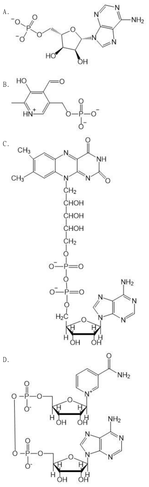

114 年第 1 次醫師醫學（一）（包括生物化學、解剖學、胚胎及發育生物學、組織學、生理學等科目知識及其臨床之應用）試題與答案
這一頁是民國 114 年第 1 次醫師醫學（一）（包括生物化學、解剖學、胚胎及發育生物學、組織學、生理學等科目知識及其臨床之應用）的整份歷屆試題，共 100 題，題目與標準答案出自考選部「國家考試試題及測驗式試題答案」開放資料，其中 100 題附有詳解。以下逐題列出題幹、選項與答案；要計時作答或記錄成績，請用線上練習。
考選部原始場次代碼：114020
線上作答這一科 →
全部 100 題
第 1 題
下列何者含有耳蝸神經核（cochlear nucleus）傳遞到下丘（inferior colliculus）的神經纖維？
- （A）內側蹄系（medial lemniscus）
- （B）脊髓蹄系（spinal lemniscus）
- （C）外側蹄系（lateral lemniscus）
- （D）三叉蹄系（trigeminal lemniscus）
答案：（C）
詳解與考點
正解：耳蝸神經核至下丘的聽覺上行路徑。聽覺纖維自耳蝸神經核經上橄欖核與相關腦幹核團後，主要隨外側蹄系（lateral lemniscus）上行至下丘（inferior colliculus），故選 C。
A：內側蹄系（medial lemniscus）傳遞身體的精細觸覺、震動覺與本體感覺，不是聽覺傳導束。
B：脊髓蹄系（spinal lemniscus）主要包含脊髓丘腦等上行感覺纖維，傳遞痛溫覺及粗觸覺，非耳蝸核輸出。
D：三叉蹄系（trigeminal lemniscus）傳遞臉部一般感覺至丘腦，與聽覺訊息不同。
本題考點：聽覺傳導路徑（auditory pathway）——耳蝸神經核的上行纖維經外側蹄系到達下丘；下丘是中腦重要的聽覺整合中繼站。
第 2 題
病人脊髓受損導致受傷部位以下肢體無力，溫痛覺喪失，但本體感覺與震動覺保留，下列何處最不可能受損？
- （A）後索（posterior funiculus）
- （B）前索（anterior funiculus）
- （C）側索（lateral funiculus）
- （D）前角（anterior horn）
答案：（A）
詳解與考點
正解：受傷以下有肢體無力與溫痛覺喪失，卻保留本體感覺及震動覺。本體感覺與震動覺主要經後索－內側蹄系路徑上行，位於脊髓後索（posterior funiculus）；既然此功能保留，後索最不可能是受損處，故選 A。
B：前索（anterior funiculus）含部分前脊髓丘腦及下行路徑，受損可參與題幹所述感覺或運動缺損的組合，不能因後索功能保留而排除。
C：側索（lateral funiculus）含外側皮質脊髓束與外側脊髓丘腦束，可分別造成肢體無力及對側溫痛覺障礙，是最符合題幹線索的區域。
D：前角（anterior horn）含下運動神經元，受損可造成同節段肌無力；雖不能單獨解釋全部感覺缺損，仍比承載保留感覺的後索更可能涉及病灶。
本題考點：脊髓傳導束定位（spinal cord tract localization）——後索傳遞震動覺與本體感覺；外側脊髓丘腦束傳遞痛溫覺，皮質脊髓束負責隨意運動。
第 3 題
關於前脈絡叢動脈（anterior choroidal artery）之敘述，下列何者錯誤？
- （A）可供給側腦室（lateral ventricle）之脈絡叢（choroid plexus）
- （B）可供給內囊後支（posterior limb of internal capsule）
- （C）多數人的前脈絡叢動脈，由內頸動脈（internal carotid artery）分支出
- （D）基底核（basal ganglion）的殼核（putamen），主要由前脈絡叢動脈供給
答案：（D）
詳解與考點
正解：本題問錯誤敘述，關鍵是前脈絡叢動脈的供血範圍。殼核（putamen）的主要血液供應來自中大腦動脈的豆紋動脈分支，而非以前脈絡叢動脈為主；因此（D）敘述錯誤，故選 D。
A：前脈絡叢動脈可供應側腦室脈絡叢的一部分，這是其命名與解剖分布的重要特徵，敘述正確。
B：前脈絡叢動脈可供應內囊後支的部分區域，梗塞時可出現顯著運動與感覺缺損，敘述正確。
C：前脈絡叢動脈通常由內頸動脈分出，敘述正確，故不是本題要找的錯誤選項。
本題考點：前脈絡叢動脈（anterior choroidal artery）——多自內頸動脈分支，供應脈絡叢及內囊後支等深部構造；基底核的殼核主要依賴中大腦動脈的穿通支。
第 4 題
下列有關巴金森氏病（Parkinson's disease）之敘述，何者錯誤？
- （A）病變部位主要在黑質網狀區（substantia nigra pars reticulata）
- （B）與 dopamine 分泌不足有關
- （C）為一種神經退化性疾病
- （D）可同時影響基底核迴路中的 direct loop 與 indirect loop
答案：（A）
詳解與考點
正解：本題問錯誤敘述，關鍵是巴金森氏病的主要病變部位。巴金森氏病以黑質緻密區（substantia nigra pars compacta）的多巴胺神經元退化為主，不是黑質網狀區（substantia nigra pars reticulata），因此（A）錯誤，故選 A。
B：黑質緻密區多巴胺神經元減少，使紋狀體的 dopamine 調控失衡，與巴金森氏病的運動症狀相關，敘述正確。
C：巴金森氏病屬神經退化性疾病，病理上可見特定蛋白質聚集與神經元流失，敘述正確。
D：多巴胺對 direct pathway 與 indirect pathway 有相反方向的調節作用；多巴胺不足會使兩條基底核迴路都失衡，敘述正確。
本題考點：巴金森氏病（Parkinson's disease）——主要病變在黑質緻密區的多巴胺神經元；基底核直接與間接路徑（direct and indirect pathways）失衡導致動作遲緩與僵硬。
第 5 題
下列何者最不可能直接參與眼睛看近物時的調適反應（accommodation-convergence reaction）？
- （A）雙眼內直肌（medial rectus）
- （B）動眼神經（oculomotor nerve）
- （C）額葉眼區（frontal eye field）
- （D）睫狀肌（ciliary muscle）
答案：（C）
詳解與考點
正解：看近物的調適－會聚反應之「直接」執行構造。近距離視物需要睫狀肌收縮使水晶體變厚、瞳孔縮小與雙眼內收；額葉眼區（frontal eye field）主要參與意志性眼球運動的皮質控制，並非此近反應的直接周邊執行成分，故選 C。
A：雙眼內直肌（medial rectus）收縮造成眼球內收，是會聚（convergence）的直接動作，故會參與。
B：動眼神經（oculomotor nerve）支配內直肌並帶有調節所需的副交感纖維，故直接參與近反應。
D：睫狀肌（ciliary muscle）收縮使懸韌帶張力降低、水晶體曲率增加，是調適（accommodation）的直接效應器。
本題考點：近反應（near response）——包含調適、會聚與縮瞳；動眼神經（oculomotor nerve）及其支配的內直肌、睫狀肌是直接執行構造。
第 6 題
下列何者負責供應內耳血液？
- （A）副腦膜動脈（accessory meningeal artery）
- （B）後腦膜動脈（posterior meningeal artery）
- （C）迷路動脈（labyrinthine artery）
- （D）咽升動脈（ascending pharyngeal artery）
答案：（C）
詳解與考點
正解：內耳的專屬動脈供應。迷路動脈（labyrinthine artery）進入內聽道後供應耳蝸與前庭器官，是內耳的主要血液來源，故選 C。
A：副腦膜動脈（accessory meningeal artery）主要供應顱內硬腦膜及相關區域，不是內耳供血動脈。
B：後腦膜動脈（posterior meningeal artery）供應後顱窩硬腦膜，與內耳實質灌流不同。
D：咽升動脈（ascending pharyngeal artery）主要供應咽部與鄰近深部構造，並非標準的內耳供血來源。
本題考點：內耳血管（inner ear vasculature）——迷路動脈供應耳蝸與前庭迷路；內耳對缺血敏感，血流中斷可導致突發的聽覺或前庭症狀。
第 7 題
下列何者並不同時參與外聽道（external acoustic meatus）與鼓膜（tympanic membrane）之一般感覺？
- （A）三叉神經（trigeminal nerve）
- （B）顏面神經（facial nerve）
- （C）舌咽神經（glossopharyngeal nerve）
- （D）迷走神經（vagus nerve）
答案：（C）
詳解與考點
正解：外聽道與鼓膜的一般感覺神經。該區可接受三叉神經、顏面神經與迷走神經的小分支感覺支配；舌咽神經（glossopharyngeal nerve）主要與中耳、咽部及舌後三分之一感覺相關，並不共同參與外聽道與鼓膜的一般感覺，故選 C。
A：三叉神經（trigeminal nerve）可經耳顳神經等分支供應外耳部分一般感覺，敘述為非答案。
B：顏面神經（facial nerve）有小感覺分支分布於外耳及外聽道部分區域，雖以運動功能著名，仍可參與此區感覺。
D：迷走神經（vagus nerve）的耳支支配外聽道與鼓膜部分感覺，刺激外耳道可誘發咳嗽反射是常見聯想。
本題考點：外耳一般感覺（general sensation of external ear）——外聽道與鼓膜可受 CN V、CN VII、CN X 分支支配；舌咽神經主要涉及中耳與咽部相關感覺。
第 8 題
下列何者隔開耳蝸管（cochlear duct/scala media）與鼓室階（scala tympani）？
- （A）前庭膜（vestibular membrane）
- （B）基底膜（basilar membrane）
- （C）鼓膜（tympanic membrane）
- （D）螺旋韌帶（spiral ligament）
答案：（B）
詳解與考點
正解：耳蝸管（scala media）與鼓室階（scala tympani）的分隔構造。基底膜（basilar membrane）位在耳蝸管下方、鼓室階上方，將兩者隔開，並承載柯蒂氏器，故選 B。
A：前庭膜（vestibular membrane）隔開耳蝸管與前庭階（scala vestibuli），不是鼓室階。
C：鼓膜（tympanic membrane）位於外耳與中耳交界，與耳蝸內三個腔室的分隔無關。
D：螺旋韌帶（spiral ligament）位於耳蝸外側壁並支持相關構造，不是耳蝸管與鼓室階之間的膜。
本題考點：耳蝸腔室解剖（cochlear compartment anatomy）——前庭膜分隔前庭階與耳蝸管；基底膜分隔耳蝸管與鼓室階，並承載柯蒂氏器（organ of Corti）。
第 9 題
下列何者並不以共同腱環（common tendinous ring）為起點？
- （A）上直肌（superior rectus）
- （B）下直肌（inferior rectus）
- （C）外直肌（lateral rectus）
- （D）下斜肌（inferior oblique）
答案：（D）
詳解與考點
正解：共同腱環（common tendinous ring）的起始肌群。四條直肌由眶尖的共同腱環起始；下斜肌（inferior oblique）則自眶底前內側的上頷骨起始，不以共同腱環為起點，故選 D。
A、B、C：上直肌（superior rectus）、下直肌（inferior rectus）與外直肌（lateral rectus）皆屬四條直肌之一，均由共同腱環起始，敘述所指的共同判準正確，因此都不是答案。
本題考點：眼外肌起始（extraocular muscle origins）——四條直肌起自共同腱環；上下斜肌起點不同，其中下斜肌起自眶底前內側。
第 10 題
下列何者與鐙骨肌（stapedius muscle）有相同的神經支配？
- （A）鼓膜張肌（tensor tympani muscle）
- （B）眼輪匝肌（orbicularis oculi muscle）
- （C）腭帆提肌（levator veli palatini muscle）
- （D）腭帆張肌（tensor veli palatini muscle）
答案：（B）
詳解與考點
正解：鐙骨肌的神經支配。鐙骨肌（stapedius muscle）由顏面神經（facial nerve, CN VII）支配；眼輪匝肌（orbicularis oculi muscle）同為顏面表情肌，也由 CN VII 支配，故選 B。
A：鼓膜張肌（tensor tympani muscle）由三叉神經下頷支的運動纖維支配，與鐙骨肌不同。
C：腭帆提肌（levator veli palatini muscle）主要經迷走神經的咽神經叢支配，不是顏面神經支配。
D：腭帆張肌（tensor veli palatini muscle）由三叉神經下頷支支配；它與鼓膜張肌同源且同神經支配，容易誤選，但非鐙骨肌。
本題考點：鐙骨肌神經支配（innervation of stapedius）——鐙骨肌由顏面神經支配；中耳另一肌肉鼓膜張肌則由三叉神經下頷支支配。
第 11 題
前囟門（anterior fontanelle）處的頭皮（scalp）主要血液供應來自：
- （A）眶上動脈（supraorbital artery）
- （B）升咽動脈（ascending pharyngeal artery）
- （C）耳後動脈（posterior auricular artery）
- （D）枕動脈（occipital artery）
答案：（A）
詳解與考點
正解：前囟門所在的前額－頭頂交界頭皮。眶上動脈（supraorbital artery）自眼動脈系統發出，向上供應前額與頭皮前部，涵蓋前囟門附近的頭皮主要供血，故選 A。
B：升咽動脈（ascending pharyngeal artery）主要供應咽部及深部頸部構造，不是前囟門頭皮的主要來源。
C：耳後動脈（posterior auricular artery）供應耳後與顳枕部鄰近頭皮，位置較後外側。
D：枕動脈（occipital artery）供應後頭皮，與位於前方的前囟門區域不符。
本題考點：頭皮血管供應（scalp arterial supply）——前頭皮由眶上與滑車上動脈供應；側後頭皮主要由淺顳、耳後與枕動脈供應。
第 12 題
擠壓鼻尖產生的痛覺，其感覺訊息透過下列何者傳遞？
- （A）眼神經分支（branches of ophthalmic nerve）
- （B）上頷神經分支（branches of maxillary nerve）
- （C）下頷神經分支（branches of mandibular nerve）
- （D）顏面神經分支（branches of facial nerve）
答案：（A）
詳解與考點
正解：鼻尖的痛覺屬一般體感覺，且鼻背與鼻尖主要屬三叉神經第一支分布。眼神經（ophthalmic nerve, V1）的分支，尤其前篩神經延續的外鼻支，可傳遞鼻尖感覺，故選 A。
B：上頷神經（maxillary nerve, V2）主要供應鼻翼旁、上唇與臉頰等中臉部，並非鼻尖痛覺的主要路徑。
C：下頷神經（mandibular nerve, V3）供應下臉與咀嚼肌相關區域，與鼻尖感覺無關。
D：顏面神經（facial nerve）主要負責顏面表情肌運動與部分特殊感覺，不負責鼻尖的一般痛覺；它因「顏面」二字看似合理，錯在一般感覺主要由三叉神經傳遞。
本題考點：三叉神經感覺分布（trigeminal sensory distribution）——V1 支配前額、鼻背與鼻尖；V2 支配中臉；顏面神經主要是顏面表情肌的運動神經。
第 13 題
下列腦神經與其所關聯的副交感神經節的配對，何者正確？
- （A）第三對腦神經（CN III）；耳神經節（otic ganglion）
- （B）第七對腦神經（CN VII）；翼腭神經節（pterygopalatine ganglion）
- （C）第九對腦神經（CN IX）；睫狀神經節（ciliary ganglion）
- （D）第十對腦神經（CN X）；下頷下神經節（submandibular ganglion）
答案：（B）
詳解與考點
正解：腦神經節前副交感纖維所到達的神經節。第七對腦神經（CN VII）的副交感纖維可經大岩神經到翼腭神經節（pterygopalatine ganglion）突觸，再支配淚腺及鼻腭腺體，故選 B。
A：第三對腦神經（CN III）的副交感纖維在睫狀神經節（ciliary ganglion）突觸，不是在耳神經節。
C：第九對腦神經（CN IX）的副交感纖維經耳神經節（otic ganglion）後支配腮腺，不是在睫狀神經節。
D：第十對腦神經（CN X）的副交感纖維主要在胸腹腔臟器壁內或近器官神經節突觸，不經下頷下神經節；下頷下神經節屬 CN VII 路徑。
本題考點：顱部副交感神經節（cranial parasympathetic ganglia）——CN III 對應睫狀神經節，CN VII 對應翼腭與下頷下神經節，CN IX 對應耳神經節；CN X 多在終末神經節突觸。
第 14 題
下列何處，有最發達的心臟梳狀肌（pectinate muscle）？
- （A）左心房後半部
- （B）右心房前半部
- （C）左心室前半部
- （D）右心室後半部
答案：（B）
詳解與考點
正解：心房梳狀肌（pectinate muscles）最發達的位置是右心房前半部，尤其右心耳；右心房後壁的靜脈竇部則相對平滑。左心房大部分平滑，僅左心耳有少量梳狀肌，故選 B。
A：左心房後半部主要形成平滑的靜脈竇部，接受肺靜脈開口，並非梳狀肌最發達處。
C：左心室前半部的內壁以肉柱（trabeculae carneae）為主；肉柱與心房的梳狀肌是不同構造。
D：右心室後半部同樣可見肉柱，而非心房特有的梳狀肌。
本題考點：心房內部構造（atrial internal anatomy）；梳狀肌（pectinate muscles）主要位於右心房前部與心耳，須與心室肉柱（trabeculae carneae）區分。
第 15 題
若病人的主動脈弓（aortic arch）發生動脈瘤（aneurysm），造成聲音沙啞，最可能是因為下列那一條神經功能間接受損？
- （A）右側迷走神經（right vagus nerve）
- （B）右側交感神經幹（right sympathetic trunk）
- （C）左側交感神經幹（left sympathetic trunk）
- （D）左側喉返神經（left recurrent laryngeal nerve）
答案：（D）
詳解與考點
正解：主動脈弓旁的關鍵臨床解剖是左喉返神經（left recurrent laryngeal nerve）繞過主動脈弓後向上行，動脈瘤擴張可壓迫此神經，造成喉內肌麻痺與聲音沙啞，故選 D。
A：右迷走神經位於右側縱隔，右喉返神經是繞右鎖骨下動脈，不與主動脈弓緊鄰。
B：右側交感神經幹受損較可能影響交感神經功能，不能直接解釋典型的聲帶麻痺性沙啞。
C：左側交感神經幹雖在左側胸腔，但不是支配喉部運動的神經；看似同在左側，仍不具此壓迫關係與功能。
本題考點：喉返神經（recurrent laryngeal nerve）的走行；主動脈弓病變造成左喉返神經麻痺，是心血管病變出現聲音沙啞的重要機轉。
第 16 題
若病人在縱隔部分（mediastinal part）的胸膜（pleura）發炎，其轉位痛最容易出現在下列何處？
- （A）頸部外側與鎖骨上方處
- （B）前胸第四肋間附近
- （C）手臂內側靠近腋下處
- （D）背部肩胛骨下方
答案：（A）
詳解與考點
正解：縱隔胸膜（mediastinal pleura）屬壁層胸膜，由膈神經（phrenic nerve，C3–C5）傳遞痛覺；因此轉位痛常投射至同一脊髓節支配的肩部、頸部外側及鎖骨上區，故選 A。
B：前胸第四肋間的感覺主要對應肋間神經節段，並非膈神經造成的典型轉位痛位置。
C：手臂內側靠近腋下多與肋間臂神經等感覺分布相關，不能代表縱隔胸膜的膈神經轉位痛。
D：背部肩胛骨下方不屬膈神經常見的皮節投射區；肩頸部才是本題的定位線索。
本題考點：壁層胸膜（parietal pleura）的感覺神經；膈神經（phrenic nerve）與 C3–C5 皮節的轉位痛（referred pain）。
第 17 題
有關氣管之敘述，下列何者錯誤？
- （A）氣管通常在胸骨角（sternal angle）水平面，分支為左、右主支氣管
- （B）右支氣管通常比左支氣管寬且較為垂直（vertical）
- （C）正常之左、右支氣管夾角約在 150 度
- （D）除氣管隆突（carina）之外，氣管的軟骨全為 C 型軟骨
答案：（C）
詳解與考點
正解：本題問錯誤敘述。正常左右主支氣管在氣管隆突處分岔的角度約為 60–70 度，而非 150 度；150 度較接近氣管與單側主支氣管所形成的鈍角描述，不能當作左右兩支氣管的夾角，故選 C。
A：氣管通常在胸骨角平面附近分叉為左右主支氣管，敘述正確，故不是答案。
B：右主支氣管較寬、較短且走向較垂直，因此吸入異物較容易進入右側，敘述正確。
D：氣管軟骨環多為後方開口的 C 型，氣管隆突則是分叉處的嵴狀構造，敘述正確。
本題考點：氣管分叉（tracheal bifurcation）與氣管隆突（carina）；右主支氣管（right main bronchus）的寬大與較垂直走行。
第 18 題
下列何者是腹膜內器官（intraperitoneal organ）？
- （A）胰臟（pancreas）
- （B）腎臟（kidney）
- （C）十二指腸（duodenum）
- （D）迴腸（ileum）
答案：（D）
詳解與考點
正解：迴腸（ileum）由腸繫膜懸掛，幾乎全被腹膜包覆，屬腹膜內器官（intraperitoneal organ），故選 D。
A：胰臟除尾部外多固定於腹後壁，屬次發性腹膜後器官；胰尾靠近脾門而具腹膜關係，不能把整個胰臟視為腹膜內器官。
B：腎臟位於腹膜後間隙（retroperitoneal space），腹膜只覆其前表面的一部分，非腹膜內器官。
C：十二指腸僅近端一小段較活動，其餘大部分為次發性腹膜後，不能作為典型腹膜內器官。
本題考點：腹膜內器官（intraperitoneal organ）與腹膜後器官（retroperitoneal organ）；迴腸具腸繫膜，胰臟、腎臟及大部分十二指腸不具此特徵。
第 19 題
進行闌尾（appendix）去除手術前，可藉由下列何種結構快速找到闌尾？
- （A）腸脂垂（omental appendices）
- （B）右結腸動脈（right colic artery）
- （C）盲腸上的結腸帶（taenia coli of cecum）
- （D）迴結腸動脈（ileocolic artery）
答案：（C）
詳解與考點
正解：盲腸上的三條結腸帶（taeniae coli）會在闌尾基部匯聚，術中沿結腸帶追蹤到盲腸端，即可快速定位闌尾（appendix），故選 C。
A：腸脂垂分布在結腸表面，但不會在闌尾基部規律匯聚，不能作為可靠定位標誌。
B：右結腸動脈的存在與走行變異較大，且不是直接指向闌尾基部的表面標誌。
D：迴結腸動脈供應盲腸、迴腸末端與闌尾區域，但血管分支不如結腸帶的匯聚關係適合快速辨識。
本題考點：闌尾定位（appendiceal localization）；三條結腸帶（taeniae coli）匯聚於闌尾基部，是手術解剖的重要地標。
第 20 題
下列何結構上有腹股溝淺環（superifical inguinal ring）的開口？
- （A）腹外斜肌腱膜（aponeurosis of external oblique muscle）
- （B）腹直肌腱膜（aponeurosis of rectus abdominis）
- （C）腹內斜肌腱膜（aponeurosis of internal oblique muscle）
- （D）腹橫肌腱膜（aponeurosis of transversus abdominis）
答案：（A）
詳解與考點
正解：腹股溝淺環（superficial inguinal ring）是腹外斜肌腱膜（aponeurosis of external oblique muscle）下內側部的三角形裂隙，為腹股溝管的表淺出口，故選 A。
B：腹直肌本身及其腱膜與腹前壁中線結構相關，並不形成腹股溝淺環。
C：腹內斜肌參與腹股溝管的上壁與精索相關肌肉構造，但淺環的裂口不在其腱膜。
D：腹橫肌的肌纖維參與腹股溝管上壁，深環則與腹橫筋膜關係密切，不能混同為腹外斜肌腱膜上的淺環。
本題考點：腹股溝管（inguinal canal）的出入口；腹股溝淺環（superficial inguinal ring）位於腹外斜肌腱膜，腹股溝深環（deep inguinal ring）位於腹橫筋膜。
第 21 題
下列何者不是腹腔幹（celiac trunk）的一級分支？
- （A）總肝動脈（common hepatic artery）
- （B）左胃動脈（left gastric artery）
- （C）胃十二指腸動脈（gastroduodenal artery）
- （D）脾動脈（splenic artery）
答案：（C）
詳解與考點
正解：腹腔幹（celiac trunk）的三條一級分支為左胃動脈、脾動脈與總肝動脈。胃十二指腸動脈（gastroduodenal artery）是總肝動脈的分支，並非直接由腹腔幹發出，故選 C。
A：總肝動脈直接起自腹腔幹，屬其一級分支，故不是答案。
B：左胃動脈是腹腔幹三大直接分支之一，敘述相符。
D：脾動脈亦直接自腹腔幹分出，沿胰臟上緣走向脾臟，屬一級分支。
本題考點：腹腔幹（celiac trunk）分支；左胃動脈、脾動脈、總肝動脈為一級分支，胃十二指腸動脈（gastroduodenal artery）則為下游分支。
第 22 題
關於子宮動脈（uterine artery），下列敘述何者錯誤？
- （A）子宮動脈是髂內動脈（internal iliac artery）的分支
- （B）子宮動脈有一段會直接跨在輸尿管（ureter）的上方
- （C）子宮動脈的主幹會先進入子宮底（fundus），之後再發出分支供應子宮頸（cervix）
- （D）子宮動脈會與卵巢動脈吻合（anastomosis）
答案：（C）
詳解與考點
正解：本題問錯誤敘述。子宮動脈（uterine artery）在子宮旁向內走行，先供應子宮頸與陰道上段，再沿子宮側緣上行至子宮體、子宮底；不是主幹先進入子宮底才發支到子宮頸，故選 C。
A：子宮動脈通常是髂內動脈前支的分支，敘述正確，故不是答案。
B：子宮動脈在輸尿管上方跨越，形成「水在橋下流」的手術解剖關係，敘述正確。
D：子宮動脈上行支可與卵巢動脈吻合，提供子宮與附件的側枝循環，敘述正確。
本題考點：子宮動脈（uterine artery）的來源與走行；子宮動脈跨越輸尿管（ureter）上方，是子宮手術避免輸尿管損傷的關鍵關係。
第 23 題
下列何者附著於恥骨聯合（pubic symphysis）？
- （A）陰莖懸韌帶（suspensory ligament of penis）
- （B）陰莖襻狀韌帶（fundiform ligament of penis）
- （C）會陰體（perineal body）
- （D）會陰淺橫肌（superficial transverse perineal muscle）
答案：（A）
詳解與考點
正解：陰莖懸韌帶（suspensory ligament of penis）固定於恥骨聯合前方，向下附著至陰莖背側的白膜，協助支撐勃起陰莖，故選 A。
B：陰莖襻狀韌帶是淺會陰筋膜向前的增厚部分，環繞陰莖根部，並非以恥骨聯合為其固定點。
C：會陰體位於會陰中央、肛門與外生殖器之間，是多條會陰肌的纖維性交會處，不附著於恥骨聯合。
D：會陰淺橫肌由坐骨結節走向會陰體，附著位置在會陰而非恥骨聯合。
本題考點：陰莖固定構造（penile supporting structures）；陰莖懸韌帶（suspensory ligament of penis）連接恥骨聯合與陰莖背側。
第 24 題
下列何者不是薦神經叢（sacral plexus）的分支？
- （A）臀上神經（superior gluteal nerve）
- （B）閉孔內肌神經（nerve to obturator internus）
- （C）陰部神經（pudendal nerve）
- （D）閉孔神經（obturator nerve）
答案：（D）
詳解與考點
正解：本題問不是薦神經叢（sacral plexus）分支者。閉孔神經（obturator nerve）來自腰神經叢（lumbar plexus）的 L2–L4 前支，經閉孔管進入大腿內側，故選 D。
A：臀上神經源自薦神經叢，支配臀中肌、臀小肌與闊筋膜張肌，敘述相符。
B：閉孔內肌神經為薦神經叢分支，支配閉孔內肌及上孖肌，故不是答案。
C：陰部神經由 S2–S4 前支組成，屬薦神經叢的重要分支，負責會陰部感覺與運動。
本題考點：腰薦神經叢（lumbosacral plexus）；閉孔神經（obturator nerve）屬腰神經叢，臀上神經、閉孔內肌神經與陰部神經屬薦神經叢。
第 25 題
下列何構造開口於海綿體尿道（spongy urethra）？
- （A）前列腺（prostate gland）
- （B）精囊（seminal vesicle）
- （C）射精管（ejaculatory duct）
- （D）尿道球腺（bulbourethral gland）
答案：（D）
詳解與考點
正解：尿道球腺（bulbourethral glands）導管穿過尿生殖膈後，開口於近端海綿體尿道，分泌黏液性前列液，故選 D。
A：前列腺腺管開口於前列腺尿道（prostatic urethra），不是海綿體尿道。
B：精囊導管與輸精管壺腹會合形成射精管，本身不直接開口至海綿體尿道。
C：射精管穿入前列腺後開口於前列腺尿道的精阜附近；看似同屬男性生殖道分泌路徑，但開口段不同。
本題考點：男性尿道分段（male urethra）；尿道球腺（bulbourethral gland）開口於海綿體尿道，射精管與前列腺腺管開口於前列腺尿道。
第 26 題
下列那一條肌肉的支配神經與其他選項完全不同？
- （A）背闊肌（latissimus dorsi）
- （B）大菱形肌（rhomboid major）
- （C）小菱形肌（rhomboid minor）
- （D）提肩胛肌（levator scapulae）
答案：（A）
詳解與考點
正解：背闊肌（latissimus dorsi）由胸背神經（thoracodorsal nerve）支配；其餘三者皆由肩胛背神經（dorsal scapular nerve）支配，因此支配神經完全不同者為 A。
B：大菱形肌由肩胛背神經支配，與（C）、（D）同屬此神經的支配範圍，故不是答案。
C：小菱形肌由肩胛背神經支配，與（B）、（D）相同。
D：提肩胛肌主要受肩胛背神經支配，亦可接受頸神經分支；本題比較的核心是它與兩菱形肌同屬肩胛背神經支配群。
本題考點：背部淺層肌肉神經支配（innervation of superficial back muscles）；背闊肌受胸背神經（thoracodorsal nerve），菱形肌與提肩胛肌受肩胛背神經（dorsal scapular nerve）。
第 27 題
下列那一神經受損，食指的外展、內收作用（abduct and adduct index）都會出現障礙？
- （A）腋神經（axillary nerve）
- （B）橈神經（radial nerve）
- （C）尺神經（ulnar nerve）
- （D）正中神經（median nerve）
答案：（C）
詳解與考點
正解：食指的外展與內收主要分別由第一背側骨間肌與第一掌側骨間肌完成，兩者均由尺神經（ulnar nerve）深支支配；尺神經受損會同時妨礙這兩個動作，故選 C。
A：腋神經支配三角肌與小圓肌，主要影響肩關節外展，與食指骨間肌無關。
B：橈神經主要支配前臂與手部伸肌群，雖影響手指伸展，不能造成食指內收與外展同時失能。
D：正中神經支配部分拇指肌及外側蚓狀肌，較易影響拇指對掌或精細屈伸協調，而非兩種食指骨間動作。
本題考點：手部骨間肌（interossei muscles）功能；背側骨間肌外展、掌側骨間肌內收，皆受尺神經（ulnar nerve）深支支配。
第 28 題
下列何者夾在內踝（medial malleolus）與外踝（lateral malleolus）之間？
- （A）跟骨（calcaneus）
- （B）距骨（talus）
- （C）舟狀骨（navicular）
- （D）骰骨（cuboid）
答案：（B）
詳解與考點
正解：距骨（talus）的滑車位在脛骨下端與內、外踝所形成的踝穴內，因此距骨正夾在內踝與外踝之間，構成踝關節（talocrural joint），故選 B。
A：跟骨位於距骨下方，主要形成距下關節，並不位於兩踝之間。
C：舟狀骨位於距骨頭的前內側，屬足弓前方構造，不在踝穴中。
D：骰骨位於足部外側的前方，與跟骨相接，離內外踝之間的踝穴較遠。
本題考點：踝關節（talocrural joint）骨性關係；距骨滑車（trochlea of talus）嵌於脛骨與內、外踝形成的踝穴。
第 29 題
下列何肌肉肌腱不構成鵝足（pes anserinus）？
- （A）股薄肌（gracilis）
- （B）縫匠肌（sartorius）
- （C）半腱肌（semitendinosus）
- （D）內收長肌（adductor longus）
答案：（D）
詳解與考點
正解：鵝足（pes anserinus）由縫匠肌、股薄肌與半腱肌的肌腱共同附著於脛骨近端內側；內收長肌（adductor longus）止於股骨粗線，並不參與鵝足，故選 D。
A：股薄肌肌腱是鵝足三條肌腱之一，故不是答案。
B：縫匠肌肌腱構成鵝足最表淺的一部分，敘述相符。
C：半腱肌肌腱亦止於脛骨近端內側，為鵝足組成之一。
本題考點：鵝足（pes anserinus）組成；縫匠肌（sartorius）、股薄肌（gracilis）、半腱肌（semitendinosus）共同止於脛骨內側。
第 30 題
正常情形下，臂神經叢（brachial plexus）的那一部分會包圍住腋動脈的第二段（second part ofaxillary artery）？
- （A）神經根（roots）
- （B）神經幹（trunks）
- （C）神經分部（divisions）
- （D）神經索（cords）
答案：（D）
詳解與考點
正解：腋動脈第二段位於胸小肌後方，臂神經叢的三條神經索（cords）依其相對位置分為外側索、內側索與後索，正環繞此段腋動脈，故選 D。
A：神經根位於頸部，尚未進入腋窩形成環繞腋動脈的排列。
B：神經幹位於後三角與鎖骨附近，不是在腋動脈第二段周圍。
C：神經分部在鎖骨後方分成前、後分部，位置仍較腋動脈第二段近端；容易因名稱順序相近混淆，但真正以動脈為中心命名的是神經索。
本題考點：臂神經叢（brachial plexus）的根、幹、分部、索、支；神經索（cords）以腋動脈第二段為定位基準。
第 31 題
下列何者位於枕下三角（suboccipital triangle）內，並且支配枕下三角的肌肉群？
- （A）第一頸神經的前支（anterior ramus of C1）
- （B）第一頸神經的後支（posterior ramus of C1）
- （C）枕大神經（greater occipital nerve）
- （D）枕小神經（lesser occipital nerve）
答案：（B）
詳解與考點
正解：第一頸神經後支（posterior ramus of C1）稱為枕下神經（suboccipital nerve），位於枕下三角內，並支配枕下肌群，故選 B。
A：第一頸神經前支參與頸神經叢並與舌下神經短暫同行，並非枕下三角內支配肌群的神經。
C：枕大神經主要來自第二頸神經後支，負責後頭皮感覺，雖在枕下區附近走行，但不支配枕下肌群。
D：枕小神經來自頸神經叢，供應耳後與外側後頭皮膚感覺，不是三角內的肌肉支配神經。
本題考點：枕下三角（suboccipital triangle）內容物；枕下神經（suboccipital nerve）為 C1 後支，運動支配枕下肌群。
第 32 題
若孕婦將著床出血誤認為月經出血，而估算出預產期為 7 月 1 日，正確的預產期為何？
- （A）比 7 月 1 日早一週
- （B）比 7 月 1 日晚一週
- （C）比 7 月 1 日晚兩週
- （D）比 7 月 1 日早兩週
答案：（D）
詳解與考點
正解：官方答案為 D；惟正常妊娠週數以末次月經第一天（last menstrual period, LMP）推算，排卵通常約在 LMP 後 2 週，著床常在受精後 6–12 日，故著床出血相對真正 LMP 通常約晚 3–4 週，不能由常規生理嚴格推出「早兩週」。本題採簡化命題假設，將著床出血視為較真正 LMP 晚約 2 週；依此假設，正確預產期比 7 月 1 日早 2 週，故選 D。
A：在題目的簡化假設下，早 1 週不足以修正假 LMP 與真正 LMP 的 2 週差距。
B：將較晚的假 LMP 用於推算，會使預產期延後而非提前，方向相反。
C：晚 2 週同樣將日期修正方向顛倒，與題目的簡化假設不符。
本題考點：預產期推算（estimated date of delivery）以末次月經（LMP）為基準；著床出血（implantation bleeding）與 LMP 的實際時間關係不能簡化為固定 2 週；考題若採簡化假設須辨識其推論方向。
第 33 題
胎兒的肺臟（lung）發育至下列那一時期發生早產，即使小心照護也無法存活（survive）？
- （A）偽腺期（pseudoglandular stage）
- （B）末囊期（terminal sac stage）
- （C）小管期（canalicular stage）
- （D）肺泡期（alveolar stage）
答案：（A）
詳解與考點
正解：偽腺期（pseudoglandular stage）時，肺內僅發育至終末細支氣管，尚無呼吸性細支氣管與可進行有效氣體交換的末端囊；此期若早產，無論照護仍無法存活，故選 A。
B：末囊期（terminal sac stage）已有末端囊與日益成熟的氣血障壁，是可支持存活的較晚期肺發育階段。
C：小管期（canalicular stage）開始形成呼吸性細支氣管與血管化的交換區，雖預後受週數與照護影響，並非題目所指絕對無法存活的最早期。
D：肺泡期（alveolar stage）在出生前後持續成熟，已有氣體交換能力，顯然不符合無法存活。
本題考點：肺發育分期（stages of lung development）；偽腺期（pseudoglandular stage）未形成氣體交換單位，小管期（canalicular stage）後才逐漸具備存活所需的交換結構。
第 34 題
下列關於胰臟（pancreas）發育的敘述，何者正確？
- （A）由中胚層發育衍生出背胰芽（dorsal pancreatic buds）和腹胰芽（ventral pancreatic buds）
- （B）當十二指腸旋轉至左側時，會使背胰芽（dorsal pancreatic buds）轉至後側和十二指腸前方的腹胰芽（ventral pancreatic buds）癒合，形成胰臟
- （C）腹胰芽（ventral pancreatic buds）主要發育為胰臟的鉤狀突（uncinate process）以及部分的頭端
- （D）環狀胰臟（annular pancreas）為常見的消化道缺陷，主要會造成胃阻塞
答案：（C）
詳解與考點
正解：腹胰芽在腸管旋轉後形成的部位。胰臟源自前腸內胚層的背、腹胰芽；腹胰芽隨十二指腸旋轉移至背胰芽後方並融合，主要形成鉤狀突與部分胰頭，故選 C。
A：胰芽的上皮性實質源自前腸內胚層（endoderm），不是中胚層；周圍結締組織等支持構造才與中胚層有關。
B：腸管旋轉時是腹胰芽移至後方與背胰芽融合，不是背胰芽轉到後側；此選項把旋轉的構造及相對位置顛倒。
D：環狀胰臟是腹胰芽異常移行或分裂所致，可環繞十二指腸而造成十二指腸阻塞，並非主要造成胃阻塞。
本題考點：胰臟發育（pancreatic development）——背、腹胰芽源自前腸內胚層；腹胰芽形成鉤狀突（uncinate process）及部分胰頭；環狀胰臟（annular pancreas）可造成十二指腸阻塞。
第 35 題
胚胎正常發育時，奇靜脈根部（root of azygos vein）的起源是：
- （A）後主靜脈（posterior cardinal vein）
- （B）總主靜脈（common cardinal vein）
- （C）前主靜脈（anterior cardinal vein）
- （D）下主靜脈（subcardinal vein）
答案：（A）
詳解與考點
正解：奇靜脈根部的胚胎靜脈來源。奇靜脈系統由主靜脈系統重塑而來，其中右側後主靜脈（posterior cardinal vein）的近端部分形成奇靜脈根部，故選 A。
B：總主靜脈（common cardinal vein）主要與上腔靜脈及右心房靜脈竇區域的形成相關，不是奇靜脈根部的來源。
C：前主靜脈（anterior cardinal vein）主要引流頭、頸與上肢區域，重塑後參與上腔靜脈及頭臂靜脈的形成，非本題構造。
D：下主靜脈（subcardinal vein）主要參與下腔靜脈及腎、性腺相關靜脈的發育；它看似也屬胚胎靜脈，但不是奇靜脈根部的直接來源。
本題考點：胚胎靜脈發育（embryonic venous development）——後主靜脈（posterior cardinal vein）重塑形成奇靜脈系統的一部分；前、總與下主靜脈各有不同的成人靜脈衍生物。
第 36 題
嚼肌（masseter）主要是源自下列何者？
- （A）第一咽弓（first pharyngeal arch）
- （B）第二咽弓（second pharyngeal arch）
- （C）第三咽弓（third pharyngeal arch）
- （D）第四及第六咽弓（fourth and sixth pharyngeal arches）
答案：（A）
詳解與考點
正解：嚼肌屬咀嚼肌。咀嚼肌由第一咽弓（first pharyngeal arch）肌原基分化，並受三叉神經下頜支支配；嚼肌因此源自第一咽弓，故選 A。
B：第二咽弓主要形成表情肌，並與顏面神經支配相連，不是嚼肌來源。
C：第三咽弓主要形成莖突舌肌（stylopharyngeus），其神經關聯為舌咽神經，與咀嚼肌不同。
D：第四及第六咽弓主要形成咽、喉相關肌群，分別與迷走神經的不同分支相關，不形成嚼肌。
本題考點：咽弓衍生物（pharyngeal arch derivatives）——第一咽弓形成咀嚼肌（muscles of mastication），其運動神經為三叉神經下頜支（mandibular division of trigeminal nerve）。
第 37 題
下列那些屬於無膜胞器（nonmembranous organelle）？① 胞內體（endosome） ② 粗糙內質網（roughendoplasmic reticulum） ③ 核糖體（ribosome） ④ 蛋白酶體（proteasome）
- （A）①②
- （B）②③
- （C）③④
- （D）①④
答案：（C）
詳解與考點
正解：「無膜胞器」，須判斷構造有無脂質雙層膜包圍。核糖體（③）是蛋白質與 rRNA 組成的複合體，蛋白酶體（④）是蛋白質降解複合體，兩者皆無膜；故組合為③④，選 C。
A：胞內體（①）是具膜的囊泡性胞器，粗糙內質網（②）也由膜構成，兩者都不符合無膜胞器。
B：粗糙內質網（②）雖附著核糖體（③），但其本體具有膜；只要組合含有（②），便不全是無膜胞器。
D：胞內體（①）參與內吞物的分選與運輸，具有界定腔室的膜，故不能與無膜的蛋白酶體（④）合列。
本題考點：胞器分類（organelle classification）——內質網（endoplasmic reticulum）與胞內體（endosome）屬膜性胞器；核糖體（ribosome）與蛋白酶體（proteasome）屬無膜胞器。
第 38 題
關於黏液細胞（mucous cell）的敘述，下列何者正確？
- （A）黏液細胞的細胞核常位於細胞的中央
- （B）在 H&E 染色下，黏液細胞的核周邊細胞質常有大量粗糙內質網（rough endoplasmic reticulum），呈現嗜鹼（basophilic）性
- （C）在 H&E 染色下，黏液細胞的頂部細胞質常呈現嗜伊紅（eosinophilic）性
- （D）在 PAS 染色下，黏液細胞之黏原顆粒（mucinogen granule）常呈現 PAS 陽性
答案：（D）
詳解與考點
正解：黏液細胞內富含醣蛋白性黏原顆粒。過碘酸－希夫染色（periodic acid-Schiff stain, PAS）可偵測多醣與醣蛋白，黏液細胞的黏原顆粒因而呈 PAS 陽性，故選 D。
A：黏液細胞的細胞核多被頂端聚集的黏液顆粒擠向基底部，而非位於細胞中央。
B：粗糙內質網造成嗜鹼性可見於蛋白質分泌旺盛的細胞；黏液細胞以頂端淡染的黏原顆粒為特徵，不能把核周粗糙內質網作為其典型 H&E 表現。
C：黏液細胞頂端的黏原顆粒在 H&E 染色常呈淡染或泡沫狀，並非典型嗜伊紅性；看似分泌顆粒都會染紅，但黏液的染色性與蛋白質性分泌物不同。
本題考點：黏液細胞（mucous cell）組織學——細胞核偏基底部，頂端含黏原顆粒（mucinogen granules）；醣蛋白性黏液可呈 PAS 陽性（PAS positive）。
第 39 題
下列何者有軟骨（cartilage）參與作用？
- （A）膜內骨化（intramembranous ossification）
- （B）骨元形成（development of osteons）
- （C）直接骨癒合（direct bone healing）
- （D）間接骨癒合（indirect bone healing）
答案：（D）
詳解與考點
正解：骨癒合過程是否經過軟骨性骨痂。間接骨癒合（indirect bone healing）會先形成纖維軟骨性骨痂，再經軟骨內骨化轉為骨組織，因此有軟骨參與，故選 D。
A：膜內骨化（intramembranous ossification）由間質細胞直接分化為成骨細胞並形成骨，沒有軟骨中間階段。
B：骨元（osteon）形成是既有骨的重塑過程，藉破骨細胞與成骨細胞更新哈弗氏系統，不以軟骨作為必要中介。
C：直接骨癒合（direct bone healing）要求骨折端高度穩定且間隙很小，主要經由骨單位直接跨越修復，通常不形成軟骨性骨痂。
本題考點：骨折癒合（fracture healing）——間接骨癒合（indirect healing）會形成軟骨性骨痂並進行軟骨內骨化（endochondral ossification）；直接骨癒合不依賴骨痂。
第 40 題
下列有關彈性纖維（elastic fibers）的敘述，何者正確？
- （A）由 3 條彈力素原纖維（elastin fibrils）形成
- （B）皮膚切片用 H&E 染色，即可分辨膠原纖維與彈性纖維
- （C）含有小纖維蛋白微纖維（fibrillin microfibrils）
- （D）淋巴組織中有大量的彈性纖維
答案：（C）
詳解與考點
正解：彈性纖維的組成。彈性纖維（elastic fibers）由核心的彈力蛋白（elastin）及外圍的小纖維蛋白微纖維（fibrillin microfibrils）構成，微纖維提供組裝與支架功能，故選 C。
A：彈性纖維不是由固定數目的「3 條」彈力素原纖維形成；其結構是彈力蛋白沉積於 fibrillin 微纖維支架。
B：彈性纖維在一般 H&E 染色下細而不易與膠原纖維清楚區分，通常需用彈性纖維特殊染色才能辨識。
D：淋巴組織的網狀支架以網狀纖維（reticular fibers）為主，不是大量彈性纖維；兩者都屬結締組織纖維，卻有不同組成與分布。
本題考點：彈性纖維（elastic fibers）——由 elastin 與 fibrillin microfibrils 組成；特殊染色較利辨識；網狀纖維（reticular fibers）是淋巴器官基質的重要成分。
第 41 題
成年後何區域的神經元（neuron）受損後，仍可由幹細胞再生？
- （A）腦幹（brainstem）
- （B）脊髓灰質（gray matter）
- （C）嗅球（olfactory bulb）
- （D）背根神經節（dorsal root ganglion）
答案：（C）
詳解與考點
正解：依傳統組織學與考試框架，嗅球（olfactory bulb）是成年後仍與神經幹細胞、神經元更新相關的中樞區域，故選 C。惟此現象在齧齒類證據明確，成人類嗅球的新生量極低且仍有爭議，因此把握度為 med。
A：腦幹神經元受損後的再生能力十分有限，並非成年神經幹細胞持續補充神經元的典型區域。
B：脊髓灰質受損常造成難以逆轉的運動或感覺功能缺損，成年脊髓不具此題所問的典型神經元再生能力。
D：背根神經節的周邊神經纖維可有一定再生能力，但題目問的是「神經元可由幹細胞再生」的區域；這與軸突周邊再生並不相同。
本題考點：成人神經新生（adult neurogenesis）——嗅球（olfactory bulb）是傳統組織學中與成年神經幹細胞、神經元更新相關的區域；中樞神經大多數區域再生能力有限。
第 42 題
下列對於連續型微血管（continuous capillary）的敘述，何者正確？
- （A）其血管壁由內膜（tunica intima）、中膜（tunica media）和外膜（tunica adventitia）組成
- （B）內皮細胞（endothelial cell）外圍不具有基底板（basal lamina）
- （C）內皮細胞（endothelial cell）有孔（fenestration）
- （D）在肌肉和中樞神經組織中常可觀察到此種微血管
答案：（D）
詳解與考點
正解：連續型微血管的分布與結構。連續型微血管（continuous capillary）內皮細胞彼此連續、具有完整基底板且沒有窗孔，常見於骨骼肌與中樞神經組織，故選 D。
A：微血管壁主要是單層內皮細胞與基底板，可能有周細胞，並不具動脈或靜脈所稱完整的內膜、中膜、外膜三層。
B：連續型微血管具有連續的基底板（basal lamina），此結構有助於物質交換與組織屏障，並非缺乏。
C：有窗孔（fenestration）是有窗型微血管的特徵，例如某些內分泌器官與腸道；連續型的重點正是內皮細胞無窗孔。
本題考點：微血管類型（capillary types）——連續型微血管（continuous capillary）具連續內皮與基底板、無 fenestration，常見於肌肉與中樞神經系統；有窗型微血管通透性較高。
第 43 題
胃腺（gastric gland）的細胞中，何者主要分泌胃蛋白酶原（pepsinogen），且在 H&E 染色下呈現嗜鹼性（basophilic）？
- （A）主細胞（chief cell）
- （B）黏液頸細胞（mucous neck cell）
- （C）胃壁細胞（parietal cell）
- （D）腸內分泌細胞（enteroendocrine cell）
答案：（A）
詳解與考點
正解：「分泌胃蛋白酶原」且 H&E 嗜鹼性。主細胞（chief cell）富含粗糙內質網以合成蛋白質性胃蛋白酶原（pepsinogen），其基底部細胞質因而嗜鹼性，故選 A。
B：黏液頸細胞（mucous neck cell）主要分泌黏液，分布於胃腺頸部，並非胃蛋白酶原的主要來源。
C：胃壁細胞（parietal cell）分泌鹽酸與內在因子，因粒線體豐富而呈嗜伊紅性，與本題的嗜鹼性蛋白酶原分泌細胞不符。
D：腸內分泌細胞（enteroendocrine cell）分泌調節消化道功能的胜肽或胺類激素，不是胃蛋白酶原的主要分泌細胞。
本題考點：胃腺細胞（gastric gland cells）——主細胞（chief cells）分泌 pepsinogen 且富粗糙內質網、呈嗜鹼性；壁細胞（parietal cells）分泌鹽酸與內在因子。
第 44 題
消化道中，下列何者的黏膜層（mucosa）及黏膜下層（submucosa）皆具有分泌黏液（mucus）的腺體？
- （A）食道（esophagus）
- （B）胃（stomach）
- （C）結腸（colon）
- （D）闌尾（appendix）
答案：（A）
詳解與考點
正解：同一器官的黏膜層與黏膜下層是否都含黏液腺。食道黏膜內可見食道賁門腺，黏膜下層則有食道腺，兩者皆能分泌黏液以利食團通過，故選 A。
B：胃的胃腺位於黏膜層，黏膜下層通常不具分泌黏液的腺體。
C：結腸黏膜有大量直管狀腸腺及杯狀細胞分泌黏液，但黏膜下層沒有相同類型的黏液腺。
D：闌尾黏膜有腸腺與杯狀細胞，且黏膜下層富含淋巴組織；其黏膜下層不是黏液腺所在。
本題考點：消化道組織學（gastrointestinal histology）——食道的黏膜與黏膜下層皆可見黏液分泌腺；胃、結腸與闌尾的腺體主要位於黏膜層。
第 45 題
下列何種現象可在老化皮膚中觀察到？
- （A）角質細胞（keratinocyte）出現萎縮現象
- （B）蘭氏細胞（Langerhans cell）數量增加
- （C）真皮的纖維母細胞（dermal fibroblast）活性增加
- （D）皮脂腺（sebaceous gland）分泌量增加
答案：（A）
詳解與考點
正解：皮膚老化的組織學變化。老化時表皮更新與角質細胞（keratinocyte）功能下降，常可見表皮變薄及角質細胞萎縮，故選 A。
B：蘭氏細胞（Langerhans cell）隨年齡增加通常減少，這也是老化皮膚免疫監視能力下降的原因之一。
C：真皮纖維母細胞（dermal fibroblast）活性在老化時下降，膠原與細胞外基質的合成減少，而非增加。
D：皮脂腺（sebaceous gland）分泌量會隨老化下降，因而常見皮膚乾燥；它看似可用來補償乾燥，實際趨勢相反。
本題考點：皮膚老化（skin aging）——表皮變薄、角質細胞萎縮；蘭氏細胞數量與纖維母細胞活性下降；皮脂分泌減少造成乾燥傾向。
第 46 題
下列何者的上皮細胞表面有特化的靜纖毛（stereocilia）？
- （A）直小管（straight tubule）
- （B）輸出小管（efferent ductule）
- （C）副睪（epididymis）
- （D）曲細精管（seminiferous tubule）
答案：（C）
詳解與考點
正解：男性生殖道中具長而不動的靜纖毛。副睪（epididymis）上皮為假複層柱狀上皮，主細胞表面有靜纖毛（stereocilia），可增加吸收與分泌的表面積，故選 C。
A：直小管（straight tubule）主要由較低的上皮細胞構成，並非靜纖毛的典型部位。
B：輸出小管（efferent ductule）上皮的顯著特徵是纖毛細胞與非纖毛吸收細胞交錯，具有的是可動纖毛而非靜纖毛。
D：曲細精管（seminiferous tubule）內為生精上皮與支持細胞，負責精子生成，沒有副睪主細胞的靜纖毛表面特徵。
本題考點：男性生殖道組織學（male reproductive tract histology）——副睪（epididymis）主細胞具靜纖毛（stereocilia）；輸出小管（efferent ductules）則有可動纖毛以協助液體與精子運輸。
第 47 題
下列有關人類嗅覺功能之敘述，何者最恰當？
- （A）嗅球（olfactory bulbs）中有許多嗅覺小球（olfactory glomeruli），每一個嗅覺小球接收同一類嗅覺受器（olfactory receptors）傳導
- （B）嗅覺刺激常與情緒反應相關，原因是來自嗅球（olfactory bulbs）的神經傳導路徑上行至中樞的海馬迴（hippocampus）
- （C）嗅球（olfactory bulbs）中之顆粒細胞（granule cells）以 glutamate 為傳導物刺激僧帽細胞（mitralcells），而僧帽細胞以 glycine 為傳導物抑制顆粒細胞
- （D）嗅覺接受器與氣味分子結合後，會藉由 cGMP 為第二信使（second messenger）進而使嗅覺感受神經元產生興奮性電位
答案：（A）
詳解與考點
正解：嗅球小球對嗅覺受器訊號的組織化。表現同一種嗅覺受器的嗅覺感受神經元，其軸突會匯聚至嗅球中相對應的嗅覺小球（olfactory glomerulus），形成按受器類型分流的訊號處理，故選 A。
B：嗅覺與情緒確有密切關係，但嗅覺路徑與情緒的主要關聯在邊緣系統如杏仁核，不能把海馬迴作為此關聯的直接主要解釋。
C：顆粒細胞（granule cells）主要以 GABA 抑制僧帽細胞（mitral cells），僧帽細胞則以 glutamate 興奮其他神經元；此選項把遞質與興奮、抑制方向都顛倒。
D：嗅覺受器活化主要經由 G 蛋白、adenylyl cyclase 與 cAMP 第二信使開啟陽離子通道，不是 cGMP。
本題考點：嗅覺傳導（olfaction）——同型嗅覺受器訊號匯聚至同一嗅覺小球（olfactory glomerulus）；嗅覺轉導主要使用 cAMP；顆粒細胞以 GABA 參與抑制性迴路。
第 48 題
下列那一個腦區，在維持晝夜節律（circadian rhythm）方面，比其他三個腦區扮演更為重要的角色？
- （A）室旁核（paraventricular nucleus）
- （B）視前區（preoptic area）
- （C）上丘（superior colliculus）
- （D）視交叉上核（suprachiasmatic nucleus）
答案：（D）
詳解與考點
正解：中樞晝夜節律的主要生理時鐘。視交叉上核（suprachiasmatic nucleus, SCN）位於下視丘、靠近視交叉，接收視網膜光照訊息並協調睡眠、荷爾蒙與行為節律，故選 D。
A：室旁核（paraventricular nucleus）參與下視丘－腦下垂體調控與自主神經功能，並非維持晝夜節律的主要時鐘。
B：視前區（preoptic area）與體溫調節及睡眠調控有關，但不是將光照訊號整合為全身晝夜節律的核心核團。
C：上丘（superior colliculus）主要處理視覺導向與眼、頭反射運動；同樣與視覺有關，卻不等於晝夜節律中樞。
本題考點：晝夜節律（circadian rhythm）——視交叉上核（suprachiasmatic nucleus, SCN）是下視丘的主要生理時鐘，利用視網膜輸入同步化內在節律。
第 49 題
情緒很緊張時，交感神經系統（sympathetic nervous system）會亢奮，此時其節後神經纖維（postganglionic fiber）最可能會：
- （A）釋放正腎上腺素（norepinephrine），並作用在心臟竇房結（SA node） beta2 受器（β2 receptor），促使心跳加快
- （B）釋放乙醯膽鹼（acetylcholine），並作用在皮膚小汗腺尼古丁型受器（nicotinic receptor），促使流汗增加
- （C）釋放正腎上腺素，並作用在支氣管平滑肌 beta2 受器（β2 receptor），促使支氣管平滑肌收縮
- （D）釋放正腎上腺素，並作用在眼睛虹膜（iris）的放射肌（radial muscle）alpha1 受器（α1 receptor），造成瞳孔（pupil）放大
答案：（D）
詳解與考點
正解：交感神經節後纖維的遞質、受器與效應器配對。多數交感節後纖維釋放正腎上腺素（norepinephrine）；眼虹膜放射肌的 α1 受器被活化後收縮，使瞳孔放大，故選 D。
A：心臟竇房結的交感作用主要經 β1 受器增加心跳，不是 β2 受器；遞質雖正確，但受器配對錯誤。
B：支配小汗腺的交感節後纖維確會釋放乙醯膽鹼，但作用於毒蕈鹼型（muscarinic）而非尼古丁型受器；此為常見的交感膽鹼能例外。
C：支氣管 β2 受器受交感刺激會使平滑肌鬆弛、支氣管擴張，不會收縮。
本題考點：交感神經（sympathetic nervous system）——多數節後纖維釋放 norepinephrine；α1 使虹膜放射肌收縮而散瞳；β1 增加心跳、β2 使支氣管擴張；汗腺是交感膽鹼能例外。
第 50 題
下列有關眼睛的光學現象，何者最不適當？
- （A）看遠物時，眼睛焦點落在視網膜之後的現象，稱為遠視
- （B）看近物時，睫狀肌收縮但水晶體無法增加聚焦能力的現象，稱為近視
- （C）水晶體隨看遠物時的扁平狀變成看近物時的橢圓狀，稱為調視（accommodation）
- （D）角膜或水晶體不是完美弧形的現象，稱為散光（astigmatism）
答案：（B）
詳解與考點
正解：「最不適當」，須辨認屈光不正與調視失敗的定義。看近物時睫狀肌雖收縮但水晶體無法增加屈光力，是老花眼（presbyopia）的典型，不是近視（myopia）；故最不適當的是 B。
A：遠視（hyperopia）是平行光在未調節狀態下焦點落於視網膜後方，因此看遠物時焦點在視網膜後的描述可成立。
C：調視（accommodation）指看近物時睫狀肌收縮、懸韌帶鬆弛，水晶體由較扁平變得較凸以增加屈光力，敘述正確。
D：散光（astigmatism）源於角膜或水晶體曲率在不同子午線不等，不能將光線聚焦為單一清楚焦點，敘述正確。
本題考點：眼球屈光（ocular refraction）——近視（myopia）焦點在視網膜前、遠視（hyperopia）在後；調視（accommodation）增加水晶體屈光力；老花眼（presbyopia）是近距調視能力下降。
第 51 題
在腦電圖記錄中，K 複合波最常出現在不同睡眠階段的那一期？
- （A）快速動眼期
- （B）非快速動眼階段的第一期
- （C）非快速動眼階段的第二期
- （D）非快速動眼階段的第三期
答案：（C）
詳解與考點
正解：K 複合波在睡眠分期的特異性。K 複合波（K-complex）是非快速動眼睡眠第 2 期（N2）的典型腦電圖特徵，常與睡眠紡錘波並列，故選 C。
A：快速動眼期（REM sleep）的腦電圖呈低振幅、混合頻率且近似清醒狀態，不以 K 複合波為特徵。
B：非快速動眼第 1 期（N1）是入睡過渡期，常見 α 波減少與 θ 波，尚未出現典型 K 複合波。
D：非快速動眼第 3 期（N3）以高振幅 δ 波的慢波睡眠為主，並非 K 複合波最常見的期別。
本題考點：睡眠分期（sleep stages）——N2 的腦電圖特徵為睡眠紡錘波（sleep spindles）與 K 複合波（K-complexes）；N3 為 δ 波主導的慢波睡眠。
第 52 題
自 celiac ganglion 出發的交感神經節後神經，最不可能影響下列何種器官之生理功能？
- （A）胃
- （B）胰臟
- （C）肝臟
- （D）唾液腺
答案：（D）
詳解與考點
正解：腹腔神經節（celiac ganglion）節後交感神經所支配的腹腔臟器範圍。它主要經腹腔叢影響前腸衍生器官，包括胃、肝臟與胰臟；唾液腺位於頭頸部，最不可能受此神經節節後纖維影響，故選 D。
A：胃是前腸器官，其交感神經供應可經腹腔神經節與腹腔叢到達，故不是答案。
B：胰臟亦為前腸相關腹腔器官，可受腹腔神經節節後交感纖維調節血管與分泌等功能。
C：肝臟的交感神經供應可經腹腔叢隨血管分布，符合腹腔神經節的支配範圍。
本題考點：腹腔神經節（celiac ganglion）與前腸（foregut）——腹腔神經節後纖維主要支配胃、肝、胰等上腹部臟器；唾液腺的自主神經調控屬頭頸部神經路徑。
第 53 題
一名未有先天或退化腦傷病史的職業殺手，在車禍意外撞傷頭部昏迷約十數小時，復甦後剛開始竟想不起自己的職業、姓名、此次旅行目的等屬於事實的知識，但殺手過去有的技術與身手俱在，而後逐漸回憶起幾乎所有知道的事實。下列關於該個案的敘述，何項最適當？
- （A）個案所擁有的「事實」的知識，應是屬於內隱記憶（implicit memory），而「身手」是外顯記憶（explicit memory）
- （B）個案所擁有的「事實」的知識，應是屬於外顯記憶（explicit memory），而「身手」是內隱記憶（implicit memory）
- （C）個案所擁有的「事實」的知識與「身手」，皆是內隱記憶（implicit memory）
- （D）個案所擁有的「事實」的知識與「身手」，皆是外顯記憶（explicit memory）
答案：（B）
詳解與考點
正解：受傷後一度遺失「事實」知識、但保留技術身手。姓名、職業與旅行目的等可被意識提取及敘述的事實，屬外顯記憶（explicit memory）；技術與身手屬程序性、非意識提取的內隱記憶（implicit memory），故選 B。
A：此選項把兩種記憶分類完全對調。事實性知識能有意識地回憶與陳述，正是外顯記憶的特徵。
C：身手可屬內隱記憶，但事實性知識不屬內隱記憶；兩者在是否能意識提取與宣告上不同。
D：事實性知識屬外顯記憶正確，但技能學習與自動化身手通常歸為內隱的程序性記憶，不能兩者皆列外顯記憶。
本題考點：記憶系統（memory systems）——外顯記憶（explicit memory）包括可宣告的事實與事件；內隱記憶（implicit memory）包括程序性記憶（procedural memory）與技能。
第 54 題
因釋放正腎上腺素（norepinephrine），而與白天的清醒程度最有關之神經細胞，其細胞體主要位於腦內何處？
- （A）reticular activating system
- （B）hypothalamus
- （C）amygdala
- （D）medial prefrontal cortex
答案：（A）
詳解與考點
正解：「釋放正腎上腺素」且與白天清醒程度有關。去甲腎上腺素能神經元集中於腦幹的藍斑核（locus coeruleus），其上行投射是網狀上行活化系統（reticular activating system）的一部分，可維持皮質覺醒；本題以此系統概括其細胞體所在，故選 A。
B：下視丘（hypothalamus）參與睡眠－覺醒與自律神經調節，例如視前區可促眠、外側下視丘的 orexin 可促醒；但題幹所指以正腎上腺素促醒的主要神經元不在此處。
C：杏仁核（amygdala）主要處理情緒、恐懼與情緒記憶，並非清醒程度相關的正腎上腺素能神經元細胞體集中處。
D：內側前額葉皮質（medial prefrontal cortex）參與高階認知及情緒調控，接受多種覺醒系統的調節；它不是此類腦幹神經元的主要發源處。
本題考點：網狀上行活化系統（reticular activating system）維持覺醒；藍斑核（locus coeruleus）是重要的正腎上腺素（norepinephrine）能核團，廣泛投射至大腦皮質。
第 55 題
造成屍僵（rigor mortis）的主要原因為何？
- （A）乳酸（lactic acid）累積
- （B）骨骼肌細胞內缺乏鈣離子
- （C）肝醣（glycogen）耗盡
- （D）骨骼肌細胞內缺乏 ATP
答案：（D）
詳解與考點
正解：死後骨骼肌持續僵硬。肌肉鬆弛時，ATP 必須與肌球蛋白（myosin）結合，才能使其自肌動蛋白（actin）脫離；死亡後 ATP 逐漸耗竭，橫橋無法解離，鈣離子又可自肌漿網外漏而促成橫橋形成，因此產生屍僵，故選 D。
A：死後無氧代謝可使乳酸累積並造成酸化，但乳酸不是使 actin-myosin 橫橋無法解離的直接主要原因。
B：屍僵形成時不是缺鈣；相反地，細胞無法維持鈣離子隔離，胞質鈣離子上升有助於肌絲交互作用。
C：肝醣耗盡會限制 ATP 的再生，因而可促進屍僵發展；但造成僵硬的直接關鍵是 ATP 缺乏，不能以肝醣耗盡取代。
本題考點：橫橋循環（cross-bridge cycle）需要 ATP 使 myosin 自 actin 解離；屍僵（rigor mortis）源於死後 ATP 耗竭及細胞內鈣離子調控失效。
第 56 題
下列有關骨骼肌纖維長度與張力之間關係（length-tension relation）的敘述，何者最為適當？
- （A）當肌纖維的長度在放鬆長度的 60％～175％範圍時，肌纖維拉得越長，收縮產生的張力就越大
- （B）肌纖維等長收縮產生最大張力的最佳長度（optimal length），大約是放鬆長度的 175％
- （C）當肌纖維被拉得越長時，其被動張力（passive tension）不會有所改變
- （D）粗肌絲橫橋與細肌絲可結合的數目越多，產生的張力就越大
答案：（D）
詳解與考點
正解：等長收縮的主動張力取決於粗、細肌絲可形成的有效橫橋數。兩者重疊在適當範圍時，可同時結合的橫橋最多，主動張力最大；重疊過少或過多都會降低有效橫橋數，故選 D。
A：肌纖維拉長並非在此整段範圍都使主動張力增加；超過最佳長度後，粗、細肌絲重疊減少，主動張力反而下降。
B：最佳長度接近肌節具有最佳重疊的生理長度，並非放鬆長度的 175％；175％時通常已因重疊不足而使主動張力下降。
C：被動張力來自 titin 與結締組織等彈性結構，肌纖維被拉長時會上升，不會維持不變。
本題考點：長度－張力關係（length-tension relation）由肌絲重疊決定主動張力；被動張力（passive tension）隨肌纖維拉長而增加。
第 57 題
若缺乏溫韋伯氏因子（von Willebrand factor），最可能出現下列何種情況？
- （A）血小板（platelets）不會黏附在膠原蛋白（collagen）上
- （B）纖維蛋白原（fibrinogen）無法聚合
- （C）凝血酶（thrombin）永遠不會被活化
- （D）血塊會比一般健康人更堅固
答案：（A）
詳解與考點
正解：溫韋伯氏因子缺乏對初級止血的影響。von Willebrand factor 連接受損血管內皮下的 collagen 與血小板表面的 GPIb，使血小板能先黏附於受傷處；缺乏時這一步受損，故選 A。
B：纖維蛋白原轉成纖維蛋白並聚合主要由凝血酶催化，並不以 von Willebrand factor 為必要條件。
C：von Willebrand factor 也可穩定凝血因子 VIII，缺乏時可影響內在凝血途徑；但不會使凝血酶永遠無法活化，故此絕對敘述錯誤。
D：血小板黏附受損會使初級止血不良，血塊傾向較不穩固而非更堅固。
本題考點：初級止血（primary hemostasis）由血小板黏附與聚集構成；von Willebrand factor 介導 collagen-GPIb 黏附，並穩定凝血因子 VIII。
第 58 題
對於正常左心與右心的比較，下列敘述何者最不適當？
- （A）左心室與右心室的心搏量（stroke volume）是一樣的
- （B）主動脈壓恆高於肺動脈壓與右心室壓
- （C）心臟週期中主動脈瓣和肺動脈瓣都是同步開關的
- （D）心收縮期（systole）的右心室壓均高於肺動脈壓
答案：（D）
詳解與考點
正解：「最不適當」及右心室與肺動脈在收縮期的壓力關係。等容收縮初期右心室壓仍低於肺動脈壓；其壓力升至超過肺動脈壓時瓣膜開啟並進入射血期，末期肺動脈壓再超過右心室壓而使瓣膜關閉。因此不能說整個收縮期右心室壓均較高，故選 D。
A：正常穩態下左右心室串聯循環，長期平均心搏量必須相同，否則血液會在肺或體循環持續鬱積，敘述適當。
B：體循環的主動脈壓高於低阻力肺循環的肺動脈壓與右心室壓，敘述適當。
C：左右心室收縮同步，半月瓣在壓力跨越閾值時幾乎同步開關；雖可有極短暫的生理時差，但題目比較正常心臟的概括敘述仍屬適當。
本題考點：心臟週期（cardiac cycle）的等容收縮與射血期；半月瓣（semilunar valves）在心室壓高於動脈壓時開啟，射血期心室與動脈壓力接近。
第 59 題
SA node 的動作電位的主升段（上升幅度最大的段落）主要是因下列何種離子的流動而產生？
- （A）fast sodium channels open，使鈉離子流入細胞內
- （B）funny channels open，使鈉離子流入細胞內
- （C）funny channels open，使鉀離子流入細胞內
- （D）L-type calcium channels open，使鈣離子流入細胞內
答案：（D）
詳解與考點
正解：SA node 動作電位「主升段」，即第 0 期。竇房結細胞沒有快速鈉離子通道主導的快速去極化；當閾值達到後，L-type calcium channels 開啟，鈣離子內流形成第 0 期上升段，故選 D。
A：快速鈉離子通道造成的是心房、心室工作肌與浦肯野纖維動作電位的快速第 0 期，不是竇房結細胞的主升段。
B：funny channels 在舒張期去極化的第 4 期參與內向電流，使膜電位緩慢達閾值；它看似與自動節律有關，卻不是題目所問最大上升幅度的第 0 期來源。
C：funny current 的淨效應主要是內向陽離子電流，並非鉀離子流入；其功能也不是形成主升段。
本題考點：竇房結動作電位（SA node action potential）的第 4 期由 funny current 參與；第 0 期主要由 L-type calcium channels 的鈣離子內流造成。
第 60 題
正常生理情況下，下列有關冠狀動脈（coronary artery）血流增加的時機與其原因的說明，何者正確？
- （A）主要在心舒張期（diastole）才會出現明顯血流，因為在心收縮期冠狀動脈會受收縮的心肌壓迫且其入口亦遭遮蔽
- （B）主要在心舒張期（diastole）才會出現明顯血流，因為心舒張期時冠狀動脈壓力小於主動脈壓力，冠狀動脈瓣膜才能開啟
- （C）主要在心收縮期（systole）才會出現明顯血流，因心收縮期時主動脈壓較大，較容易將血液送入冠狀動脈
- （D）主要在心收縮期（systole）才會出現明顯血流，因僅在心收縮期時血液才由左心室送入主動脈，進而再送入冠狀動脈
答案：（A）
詳解與考點
正解：官方答案為 A；惟題幹泛稱冠狀動脈，舒張期灌流優勢以左冠狀循環最明顯，核心機轉是左心室收縮壓迫壁內冠狀血管，而非冠狀動脈入口在收縮期遭遮蔽。依主要機轉判斷，（A）仍是最接近的選項，故選 A。左心室在收縮期會強力壓迫心肌內冠狀血管，使血流受限；進入舒張期後心肌放鬆，而主動脈舒張壓仍將血液灌入冠狀動脈開口，因此明顯冠狀血流主要見於舒張期，故選 A。
B：冠狀動脈開口不是由「冠狀動脈瓣膜」控制；血流的驅動力是主動脈壓與冠狀血管壓差，敘述將解剖與機制混淆。
C：收縮期雖有較高主動脈壓，但左心室肌肉同時壓迫冠狀微血管，淨血流不會主要增加，這正是最容易被單看動脈壓誤導之處。
D：血液在收縮期射入主動脈後，儲存在主動脈彈性血管中的能量可於舒張期維持壓力並灌流冠狀動脈，故非僅收縮期才有血流。
本題考點：冠狀循環（coronary circulation）以舒張期灌流為主；左心室收縮造成的心肌內血管壓迫會限制收縮期冠狀血流。
第 61 題
許多情況可導致血壓升高。此時人體為因應此一血壓上升狀況，所啟動的下調血壓機制，最可能為下列何者？
- （A）活化可釋放一氧化氮之神經元，並減少 endothelin-1 釋放
- （B）抑制可釋放一氧化氮之神經元，並增加 endothelin-1 釋放
- （C）抑制可釋放一氧化氮之神經元，並減少 endothelin-1 釋放
- （D）活化可釋放一氧化氮之神經元，並增加 endothelin-1 釋放
答案：（A）
詳解與考點
正解：血壓升高後的下調機制，方向應為血管舒張。nitric oxide（NO）使血管平滑肌舒張，endothelin-1 是強力血管收縮物；增加前者、減少後者可降低周邊血管阻力並有助降壓，故選 A。
B：抑制 NO 並增加 endothelin-1 會同時削弱舒張、加強收縮，預期使血壓更升高。
C：減少 endothelin-1 雖有利降壓，但抑制 NO 會減少舒張作用，並非最完整的下調反應。
D：活化 NO 神經元雖有舒張趨勢，但增加 endothelin-1 同時造成收縮，兩項作用互相牴觸，非最可能的降壓組合。
本題考點：一氧化氮（nitric oxide, NO）促進血管舒張；內皮素-1（endothelin-1）促進血管收縮；周邊血管阻力（systemic vascular resistance）是動脈壓的重要決定因子。
第 62 題
下列何種刺激最可能會造成支氣管收縮（bronchoconstriction）？
- （A）鄰近的肺小動脈（pulmonary arteriole）被阻塞
- （B）肺泡（alveolus）內二氧化碳分壓（ ）上升
- （C）吸氣（inspiration）
- （D）支氣管平滑肌（smooth muscle）的β2 腎上腺素受器（adrenergic receptor）被刺激
答案：（A）
詳解與考點
正解：局部肺灌流下降時的通氣灌流配對。鄰近肺小動脈阻塞會使該區肺泡灌流不足、肺泡二氧化碳下降；低肺泡二氧化碳會造成局部支氣管收縮，將通氣導向仍有血流的區域，故選 A。
B：肺泡二氧化碳上升傾向使支氣管擴張，以增加該區通氣並排出二氧化碳，方向與題目所問的收縮相反。
C：吸氣時肺容積增加，肺實質對氣道的徑向牽拉增加，氣道傾向擴張而非收縮。
D：刺激支氣管平滑肌的 β2 腎上腺素受器會使平滑肌鬆弛，是支氣管擴張的典型機轉，非收縮。
本題考點：通氣灌流配對（ventilation-perfusion matching）中，低肺泡二氧化碳促使局部支氣管收縮；β2 adrenergic receptor 刺激造成支氣管擴張。
第 63 題
有關肺傳導區（conducting zone）之特性，下列敘述何者最不適當？
- （A）分泌黏液（mucus）
- （B）構成解剖無效腔（anatomical dead space）
- （C）分泌表面張力素（surfactant）
- （D）調控呼吸道阻力（airway resistance）
答案：（C）
詳解與考點
正解：「肺傳導區」而非呼吸區。傳導區自鼻腔至終末細支氣管，主要負責導氣、加溫、加濕與清除異物，並不進行肺泡表面張力素的主要分泌；surfactant 由呼吸區肺泡的第二型肺泡細胞分泌，故最不適當的是 C。
A：傳導區的杯狀細胞與腺體可分泌黏液，配合纖毛清除吸入顆粒，敘述適當。
B：傳導區不參與氣體交換，故其容積構成解剖無效腔（anatomical dead space），敘述適當。
D：傳導區中的支氣管平滑肌可改變管徑，因而對呼吸道阻力有重要調控作用，敘述適當。
本題考點：傳導區（conducting zone）負責導氣與氣道防禦，構成解剖無效腔；表面張力素（surfactant）主要由第二型肺泡細胞（type II pneumocyte）分泌。
第 64 題
下列何種脂肪酶（lipase）需要膽汁幫助其消化作用？
- （A）gastric lipase
- （B）pancreatic lipase
- （C）pancreatic colipase
- （D）lingual lipase
答案：（B）
詳解與考點
正解：脂肪乳化後在小腸腔的消化。膽鹽可乳化脂肪，但也會抑制 pancreatic lipase 與脂滴接觸；pancreatic colipase 使 pancreatic lipase 能附著於膽鹽包覆的脂滴上，因此胰脂肪酶的有效消化作用需仰賴膽汁與 colipase 所建立的環境，故選 B。
A：gastric lipase 在胃的酸性環境中作用，不以膽汁乳化為必要條件。
C：pancreatic colipase 是胰脂肪酶的輔因子，不是水解三酸甘油酯的脂肪酶；它的作用是協助（B）pancreatic lipase 接近脂滴。
D：lingual lipase 由舌腺分泌並可在胃中繼續作用，亦不需膽汁協助。
本題考點：胰脂肪酶（pancreatic lipase）是小腸脂肪消化的主要酵素；膽鹽（bile salts）乳化脂肪，colipase 協助 lipase 在膽鹽存在下作用。
第 65 題
分泌素（secretin）最主要的生理作用為何？
- （A）刺激肝臟分泌凝血因子
- （B）刺激胰臟分泌胰島素
- （C）刺激肝臟免疫細胞分泌促發炎激素
- （D）刺激胰臟分泌碳酸氫根離子
答案：（D）
詳解與考點
正解：secretin 的主要生理作用。酸性食糜進入十二指腸會刺激 S 細胞分泌 secretin，後者主要作用於胰臟導管細胞，使其分泌富含碳酸氫根離子的液體以中和胃酸，故選 D。
A：凝血因子主要由肝臟合成，但不是 secretin 的主要調節目標。
B：胰島素分泌主要受血糖及腸泌素等調節；secretin 的核心作用不是刺激胰島 β 細胞分泌胰島素。
C：肝臟免疫細胞的促發炎激素屬免疫調控，與 secretin 對酸性食糜的消化生理反應無關。
本題考點：分泌素（secretin）由十二指腸 S cells 分泌；其主要作用是刺激胰臟導管分泌碳酸氫根（bicarbonate），中和進入十二指腸的酸性食糜。
第 66 題
某物質在血液中維持恆定濃度 0.3 mg/L，可由腎絲球過濾。在收集整日尿液後，得知此物質在 1500 mL 尿液中，濃度為 10 mg/L。腎小管對此物質最可能進行何種作用？
- （A）reabsorption
- （B）secretion
- （C）filtration only
- （D）anabolism
答案：（A）
詳解與考點
正解：比較物質的排泄量與過濾負荷。尿中排泄量為 10 mg/L × 1.5 L/day=15 mg/day。其清除率為 15 mg/day ÷ 0.3 mg/L=50 L/day，約 35 mL/min，低於可自由過濾物質的腎絲球過濾率；表示濾過後有淨回收，故選 A。
B：若有淨分泌，排泄量會高於單純濾過所能解釋的量，清除率通常高於腎絲球過濾率；本題方向相反。
C：若僅過濾且無後續處理，清除率應等於腎絲球過濾率；本題算得明顯較低，不能選 filtration only。
D：anabolism 指合成代謝，並非腎小管處理濾液中物質的機制。
本題考點：腎清除率（renal clearance）＝尿中濃度 × 尿流量／血漿濃度；清除率低於腎絲球過濾率表示淨再吸收（net reabsorption）。
第 67 題
與近髓質腎元（juxtamedullary nephron）相比較，皮質腎元（cortical nephron）最常缺少下列那一部分？
- （A）近曲小管（proximal convoluted tubule）
- （B）近直小管（proximal straight tubule）
- （C）亨利氏上升細小管（thin ascending limb, Henle's loop）
- （D）遠曲小管（distal convoluted tubule）
答案：（C）
詳解與考點
正解：皮質腎元相較於近髓質腎元的亨利氏環較短。近髓質腎元的長亨利氏環深入腎髓質，包含薄下降支與薄上升支，參與逆流增幅；多數皮質腎元的環較短，常缺少薄上升支，故選 C。
A：近曲小管是兩類腎元共有的節段，負責大量濾液再吸收，並非皮質腎元常缺少者。
B：近直小管為近曲小管後續的直行部分，兩類腎元皆有，差別主要在其後亨利氏環深入髓質的程度。
D：遠曲小管同樣存在於皮質與近髓質腎元，與腎元類型差異無關。
本題考點：皮質腎元（cortical nephron）多具有短亨利氏環；近髓質腎元（juxtamedullary nephron）的長亨利氏環與薄上升支有助逆流增幅（countercurrent multiplication）及尿液濃縮。
第 68 題
某人有高血糖及高血壓的問題，同時發現其有色素沉積皮膚的現象。此人最有可能罹患下列何種疾病？
- （A）先天性腎上腺增生症（congenital adrenal hyperplasia）
- （B）愛迪生氏症（Addison's disease）
- （C）腦下腺腫瘤產生大量腎皮促素（adrenocorticotropic hormone）分泌
- （D）腎上腺皮質腫瘤產生大量皮質醇（cortisol）與醛固酮（aldosterone）
答案：（C）
詳解與考點
正解：高血糖、高血壓加上皮膚色素沉積。腦下腺腫瘤分泌過多 ACTH 時，ACTH 刺激腎上腺皮質產生 cortisol，造成高血糖與升壓效應；ACTH 與黑色素細胞刺激素相關，過量時也可使皮膚色素增加，故選 C。
A：先天性腎上腺增生症可因 ACTH 增加而色素沉積，但常見型態的皮質醇不足與雄性素過多，不能最完整解釋高血糖及高血壓組合。
B：Addison's disease 也常有色素沉積，卻是腎上腺皮質功能低下，典型傾向低血壓與低血糖，方向與題幹相反。
D：腎上腺皮質腫瘤分泌 cortisol 與 aldosterone 可造成高血糖、高血壓，容易成為誘答；但 cortisol 過多會抑制 ACTH，通常不會造成 ACTH 驅動的色素沉積。
本題考點：庫欣病（Cushing disease）由 ACTH 分泌性腦下腺腫瘤造成；ACTH 過多可導致皮質醇過多與色素沉積（hyperpigmentation）。
第 69 題
有關副甲狀腺功能相關的敘述，下列何者最不適當？
- （A）接受兩側副甲狀腺切除手術的病人術後血漿中磷離子濃度降低
- （B）缺乏副甲狀腺素的病人會造成其肌肉神經系統過度興奮（neuromuscular hyperexcitability）
- （C）副甲狀腺素會促進腎臟活化態維生素 D 的生成作用
- （D）副甲狀腺素會增加骨吸收作用（bone resorption）
答案：（A）
詳解與考點
正解：「最不適當」及雙側副甲狀腺切除後的磷離子變化。副甲狀腺素（PTH）原本會降低近端腎小管對磷酸鹽的再吸收，促進排磷；切除後 PTH 缺乏，排磷減少，血漿磷離子應上升而非降低，故選 A。
B：PTH 缺乏造成低血鈣，會提高神經肌肉興奮性，可出現抽搐或手足搐搦，敘述適當。
C：PTH 促進腎臟活化維生素 D，有助腸道鈣吸收，敘述適當。
D：PTH 透過骨細胞相關訊號促進骨吸收，使鈣、磷自骨釋出，敘述適當。
本題考點：副甲狀腺素（parathyroid hormone, PTH）提高血鈣並降低血磷；PTH 促進腎臟活化維生素 D，且增加骨吸收（bone resorption）。
第 70 題
有關甲狀腺荷爾蒙（thyroid hormone）的敘述，下列何者最不適當？
- （A）促甲狀腺荷爾蒙（thyroid-stimulating hormone, TSH）會促進甲狀球蛋白（thyroglobulin）分解而釋放甲狀腺荷爾蒙
- （B）甲狀腺分泌的甲狀腺荷爾蒙主要是 thyroxine（T4）
- （C）在血液中 thyroxine（T4）主要會與血漿蛋白結合，triiodothyronine（T3）則以游離型（free-form）居多
- （D）在目標細胞內與甲狀腺荷爾蒙受器（thyroid hormone receptor）結合的分子主要為 triiodothyronine（T3）
答案：（C）
詳解與考點
正解：「最不適當」及血中甲狀腺荷爾蒙的運輸型態。T4 與 T3 在血中都以結合血漿蛋白為主，只有很小部分以游離型存在；因此不能說 T3 以游離型居多，故選 C。
A：TSH 刺激甲狀腺細胞攝取膠質並分解 thyroglobulin，釋放已形成的甲狀腺荷爾蒙，敘述適當。
B：甲狀腺直接分泌的產物以 T4 為主，周邊組織再將部分 T4 轉為較具活性的 T3，敘述適當。
D：T3 是與細胞內甲狀腺荷爾蒙受器結合的主要活性型態，敘述適當。
本題考點：甲狀腺荷爾蒙（thyroid hormones）在血中主要與蛋白結合；T4 是主要分泌型，T3 是受器主要結合的活性型。
第 71 題
甲狀腺功能亢進（hyperthyroidism）患者血液含有高量甲狀腺素（thyroid hormone）和低量甲狀腺促素（thyroid-stimulating hormone, TSH），此最可能是下列何種情況所造成？
- （A）甲狀腺腫瘤（thyroid tumor）
- （B）副甲狀腺萎縮（parathyroid atrophy）
- （C）腦下腺前葉腫瘤（anterior pituitary tumor）
- （D）下視丘腫瘤（hypothalamic tumor）
答案：（A）
詳解與考點
正解：甲狀腺荷爾蒙高而 TSH 低，代表原發性甲狀腺過度分泌，對腦下腺產生負回饋。甲狀腺腫瘤可自主分泌甲狀腺荷爾蒙，使其升高並抑制 TSH，故選 A。
B：副甲狀腺萎縮影響的是 PTH 與鈣磷平衡，與 TSH－甲狀腺荷爾蒙軸無直接關係。
C：若腦下腺前葉腫瘤分泌 TSH，預期 TSH 會升高或不適當正常，而不是被抑制至低量。
D：下視丘腫瘤若增加 TRH 驅動，會使 TSH 升高；若降低 TRH，則甲狀腺荷爾蒙也傾向降低，皆不符合題幹組合。
本題考點：下視丘－腦下腺－甲狀腺軸（hypothalamic-pituitary-thyroid axis）受負回饋調節；原發性甲狀腺功能亢進（primary hyperthyroidism）呈現 thyroid hormone 高、TSH 低。
第 72 題
有關荷爾蒙之敘述，下列何者最為適當？
- （A）甲狀腺素是衍生自血清蛋白（albumin）
- （B）雌性素（estrogens）是合成雄性素（androgens）的前驅物
- （C）自主神經系統（autonomic nervous system）參與調節醛固酮（aldosterone）之分泌
- （D）類固醇荷爾蒙（steroid hormones）是衍生自三酸甘油酯（triglycerides）
答案：（C）
詳解與考點
正解：醛固酮分泌的調節。交感神經活化可促進腎臟腎素釋放，繼而透過腎素－血管張力素－醛固酮系統（RAAS）增加 aldosterone 分泌，因此自主神經系統確實參與調節，故選 C。
A：甲狀腺素由胺基酸 tyrosine 衍生，不是由 albumin 衍生；albumin 是血中運輸蛋白之一。
B：類固醇生成中 androgen 可作為 estrogen 的前驅物，方向不是 estrogen 合成 androgen。
D：類固醇荷爾蒙由 cholesterol 衍生，不是由 triglycerides 衍生；兩者雖同屬脂質，卻不能互相替代作為此生合成前驅物。
本題考點：腎素－血管張力素－醛固酮系統（renin-angiotensin-aldosterone system, RAAS）受交感神經調節；甲狀腺素（thyroid hormone）衍生自 tyrosine；類固醇荷爾蒙（steroid hormones）衍生自 cholesterol。
第 73 題
下列何者在生殖週期中期誘發性促素（FSH 與 LH）高峰分泌（surge），以促使卵細胞成熟與排卵？
- （A）雌二醇（estradiol）
- （B）黃體素（progesterone）
- （C）前列腺素（prostaglandin）
- （D）二氫睪固酮（dihydrotestosterone）
答案：（A）
詳解與考點
正解：週期中期誘發 FSH 與 LH surge 以排卵。成熟濾泡持續分泌高濃度 estradiol 時，對下視丘與腦下腺由負回饋轉為正回饋，增加 GnRH 驅動並引發 LH 與較小的 FSH 高峰，促進卵母細胞成熟及排卵，故選 A。
B：progesterone 在排卵後由黃體大量分泌，對下視丘與腦下腺主要為負回饋，抑制而非誘發性促素高峰。
C：prostaglandin 參與局部組織反應，也可參與排卵過程的局部機制；但造成週期中期 FSH 與 LH surge 的內分泌正回饋訊號是（A）estradiol。
D：dihydrotestosterone 是強效雄性素，並非女性月經週期中期觸發性促素高峰的訊號。
本題考點：雌二醇正回饋（estradiol positive feedback）在排卵前觸發 LH surge；性促素高峰（gonadotropin surge）促成排卵（ovulation）與卵母細胞成熟。
第 74 題
下列鍵結或作用力中，何者在生理條件下的穩定度最高？
- （A）離子鍵（ionic bonds∕salt bridge）
- （B）共價鍵（covalent bonds）
- （C）氫鍵（hydrogen bonds）
- （D）凡得瓦力（van der Waals interactions）
答案：（B）
詳解與考點
正解：比較生理條件下各種鍵結或作用力的穩定度。共價鍵由原子間共享電子形成，鍵能遠高於非共價作用力，在生理環境中最穩定，故選 B。蛋白質的骨架與許多小分子的結構完整性即仰賴共價鍵。
A：離子鍵或鹽橋是帶相反電荷基團間的靜電吸引，在水溶液中會受溶劑屏蔽與 pH 影響，雖可穩定蛋白質構形，整體強度不及共價鍵。
C：氫鍵對蛋白質二級結構與 DNA 鹼基配對很重要，但屬較弱的非共價作用力，容易受水分子競爭，並非本題最穩定者。
D：凡得瓦力來自分子短暫偶極造成的微弱吸引，單一作用力最弱；它可因大量累積而協助分子緊密堆疊，卻不能和共價鍵相比。
本題考點：共價鍵（covalent bond）是生物分子主要的強鍵結；非共價作用力（noncovalent interactions）包括離子鍵、氫鍵與凡得瓦力，負責可逆辨識與構形穩定。
第 75 題
蛋白質主鏈上有兩個可以轉動的二面角（phi (Φ) and psi (Ψ)）。這兩個二面角是位於下列那個原子的兩側？
- （A）N
- （B）C-alpha
- （C）C-carbonyl
- （D）C-beta
答案：（B）
詳解與考點
正解：蛋白質主鏈可轉動的 φ 與 ψ 二面角。φ 是 N—Cα 鍵的旋轉角，ψ 是 Cα—C=O 鍵的旋轉角；兩者共同的中心原子都是 Cα，故選 B。胜肽 C—N 鍵因具部分雙鍵性而旋轉受限，正是需要區分的地方。
A：N 位於 φ 角的一側，但 ψ 角不以 N 為共同原子；把 N 當成兩個角的中心，忽略了 ψ 位於 Cα—羰基碳鍵。
C：羰基碳位於 ψ 角的一側，卻不是 φ 與 ψ 共用的中心；φ 角是在 N—Cα 鍵周圍。
D：Cβ 屬胺基酸側鏈原子，不是蛋白質主鏈的 φ 或 ψ 二面角所圍繞的原子。
本題考點：蛋白質主鏈二面角（backbone dihedral angles）中的 φ（phi）與 ψ（psi）皆以 Cα 為中心；胜肽鍵（peptide bond）具平面性，使 ω 角通常不易自由旋轉。
第 76 題
下列關於酵素的敘述，何者錯誤？
- （A）具有酵素功能的生物分子不一定是蛋白質
- （B）酵素可改變其催化反應的熱力學平衡狀態
- （C）酵素可改變其催化反應的動力學活化能
- （D）酵素催化反應後大多可回復至初始狀態
答案：（B）
詳解與考點
正解：題目問錯誤敘述，關鍵是酵素影響反應速率而不改變平衡。酵素降低正、逆反應的活化能，讓系統更快到達既有的熱力學平衡；它不改變 ΔG、平衡常數或平衡組成，故錯誤的是 B。
A：具有催化功能的生物分子不必是蛋白質；核酶（ribozyme）是具催化活性的 RNA，故敘述正確，非答案。
C：酵素穩定過渡態，因而降低反應的動力學活化能，這是其加速反應的核心機制，敘述正確。
D：酵素在催化循環後通常恢復原來狀態，可再參與下一輪反應；少量酵素例外會被不可逆抑制，但不影響一般原則。
本題考點：酵素催化（enzyme catalysis）降低活化能（activation energy）並提高反應速率；熱力學平衡（thermodynamic equilibrium）由 ΔG 與平衡常數決定，不因酵素改變。
第 77 題
NAD+ 的化學結構應為下列何者？

本題選項為上圖中的 A／B／C／D，請對照圖片作答。
本題送分，無標準答案
詳解與考點
本題官方公告送分。
第 78 題
下列何者可以通過改變 DNA 的連接數（linking number），來調控 DNA 的緊密度或纏繞狀態，並在 DNA 的複製過程中扮演關鍵角色？
- （A）DNA 解螺旋酶（DNA helicase）
- （B）DNA 聚合酶（DNA polymerase）
- （C）DNA 連接酶（DNA ligase）
- （D）DNA 拓樸異構酶（DNA topoisomerase）
答案：（D）
詳解與考點
正解：「改變 DNA 的連接數（linking number）」與複製時解除纏繞。DNA 拓樸異構酶會暫時切開一股或兩股 DNA，讓 DNA 鏈通過後再封回，直接改變連接數並釋放複製叉前方的扭轉壓力，故選 D。
A：DNA 解螺旋酶利用能量分開雙股 DNA，負責打開複製叉；它看似也能處理纏繞，但不以切斷再重接 DNA 的方式改變連接數。
B：DNA 聚合酶負責以模板延伸新生 DNA 鏈，無法調整既有雙股 DNA 的拓樸連接數。
C：DNA 連接酶封合 DNA 斷裂處或岡崎片段間的缺口；它形成磷酸二酯鍵，並非複製時解除超螺旋壓力的主要酶。
本題考點：DNA 拓樸異構酶（DNA topoisomerase）藉暫時切斷與再連接 DNA 改變連接數（linking number）；DNA 複製（DNA replication）時需解除複製叉前方的正超螺旋。
第 79 題
當粒線體呼吸（mitochondrial respiration）被抑制時，也會造成嘧啶（pyrimidine）重新合成路徑（denovo synthesis）之抑制，此現象是影響下列何種酵素所造成？
- （A）carbamoyl phosphate synthetase
- （B）aspartate transcarbamoylase
- （C）dihydroorotate dehydrogenase
- （D）orotidine 5'-mono-phosphate decarboxylase
答案：（C）
詳解與考點
正解：粒線體呼吸受抑會連帶阻斷嘧啶重新合成。dihydroorotate dehydrogenase 位於粒線體內膜並將電子傳給呼吸鏈的泛醌；呼吸鏈受抑時其氧化反應無法順利進行，因而抑制 de novo 嘧啶合成，故選 C。
A：carbamoyl phosphate synthetase Ⅱ 催化嘧啶合成初始步驟，使用 ATP 與麩醯胺酸，但不直接以粒線體呼吸鏈作電子受體。
B：aspartate transcarbamoylase 將 carbamoyl phosphate 與天門冬胺酸結合，屬合成早期胞質步驟，和呼吸鏈沒有直接耦聯。
D：orotidine 5'-monophosphate decarboxylase 催化 OMP 脫羧生成 UMP，並非粒線體呼吸受抑時的直接受影響步驟。
本題考點：二氫乳清酸去氫酶（dihydroorotate dehydrogenase）是嘧啶重新合成（de novo pyrimidine synthesis）中與粒線體電子傳遞鏈（electron transport chain）耦聯的酵素。
第 80 題
真核細胞的 DNA 聚合酶中，下列何者沒有參與細胞核內染色體的 DNA 合成？
- （A）DNA 聚合酶α
- （B）DNA 聚合酶ε
- （C）DNA 聚合酶γ
- （D）DNA 聚合酶δ
答案：（C）
詳解與考點
正解：題幹限定「細胞核內染色體」的 DNA 合成。DNA 聚合酶γ專責粒線體 DNA 的複製與修復，不參與核染色體 DNA 合成，故選 C。
A：DNA 聚合酶α 與 primase 複合體製造 RNA-DNA 引子，直接參與核 DNA 複製起始。
B：DNA 聚合酶ε主要參與真核核 DNA 複製的前導股延伸，也具校對功能，故非答案。
D：DNA 聚合酶δ主要參與後隨股與岡崎片段的延伸，是核染色體複製的重要酵素。
本題考點：真核 DNA 複製（eukaryotic DNA replication）中，DNA polymerase α 起始、δ與ε延伸核 DNA；DNA polymerase γ則負責粒線體 DNA（mitochondrial DNA）。
第 81 題
一般 DNA 聚合酶（DNA polymerase）的聚合作用，反應中通常不需加：
- （A）引子（primer）
- （B）鎂離子（Mg2+）
- （C）腺苷三磷酸（ATP）
- （D）去氧核糖核苷三磷酸（dNTPs）
答案：（C）
詳解與考點
正解：DNA 聚合酶本身的鏈延伸反應需要什麼。聚合酶需既有引子的 3'OH、Mg2+ 作為催化輔因子，以及 dNTP 作底物；dNTP 釋出的焦磷酸所含高能鍵提供聚合能量，因此通常不需另加 ATP，故選 C。
A：DNA 聚合酶不能從零開始合成 DNA，必須有引子提供可延伸的 3'OH，故引子是必需條件。
B：Mg2+ 協助穩定 dNTP 的負電荷並參與催化，是 DNA 聚合酶反應常需的二價金屬離子。
D：dNTP 同時是新 DNA 鏈的單體與能量來源，缺少它便無法進行聚合。
本題考點：DNA 聚合（DNA polymerization）需要 primer、模板、dNTP 與二價金屬離子；dNTP 水解提供反應能量，ATP不是 DNA 鏈延伸的直接必需底物。
第 82 題
下列那一個蛋白沒有直接參與大腸桿菌的甲基指引核酸配對錯誤修復（methyl-directed mismatchrepair）？
- （A）DNA 聚合酶Ⅲ
- （B）DNA 連接酶（DNA ligase）
- （C）DNA 糖基化酶（DNA glycosylase）
- （D）DNA 解螺旋酶Ⅱ（DNA helicase Ⅱ）
答案：（C）
詳解與考點
正解：大腸桿菌的甲基指引錯配修復。此系統以 Mut 蛋白辨認錯配與未甲基化新生鏈，切除含錯配片段後由 DNA 聚合酶Ⅲ補合、DNA 連接酶封口，並有 DNA 解螺旋酶Ⅱ協助解旋；DNA 糖基化酶屬鹼基切除修復而非此路徑，故選 C。
A：DNA 聚合酶Ⅲ在切除錯誤片段後依母鏈補回 DNA，直接參與錯配修復的重合成步驟。
B：DNA 連接酶在補合後封住殘留缺口，是錯配修復完成所需的直接步驟。
D：DNA 解螺旋酶Ⅱ（UvrD）協助將含錯配的切除片段從 DNA 上移除，故屬該修復系統成員。
本題考點：甲基指引錯配修復（methyl-directed mismatch repair）辨別新舊 DNA 鏈後進行切除、重合成與連接；鹼基切除修復（base excision repair）才主要使用 DNA glycosylase。
第 83 題
蛋白質轉譯後修飾時，下列那個胺基酸殘基無法進行磷酸化（phosphorylation）？
- （A）酪胺酸（tyrosine）
- （B）絲胺酸（serine）
- （C）甲硫胺酸（methionine）
- （D）蘇胺酸（threonine）
答案：（C）
詳解與考點
正解：一般蛋白質磷酸化可接受磷酸基的側鏈。絲胺酸、蘇胺酸與酪胺酸側鏈含羥基，常形成 O-磷酸酯；甲硫胺酸側鏈含硫醚而無游離羥基，並非典型可由蛋白激酶磷酸化的殘基，故選 C。
A：酪胺酸具有酚羥基，是 tyrosine kinase 可磷酸化的經典殘基。
B：絲胺酸具有羥基，是 serine/threonine kinase 常見的磷酸化受體。
D：蘇胺酸也帶有羥基，常與絲胺酸並列為蛋白質調控的磷酸化位點。
本題考點：蛋白質磷酸化（protein phosphorylation）最常修飾 Ser、Thr、Tyr 的羥基；蛋白激酶（protein kinase）以此改變蛋白質活性或交互作用。
第 84 題
DNA 足跡鑑定（DNA footprinting assay）最適用於下列何種分析？
- （A）一段基因編碼區的 5'端以及 3'端的位置
- （B）基因組中會與調控 RNA 結合的位置
- （C）DNA 與蛋白質發生專一性結合的位置
- （D）被剪接的內含子（intron）在前信使 RNA（pro-mRNA）中的位置
答案：（C）
詳解與考點
正解：DNA footprinting 的「保護足跡」。先讓蛋白質與 DNA 結合，再以核酸酶部分切割；被蛋白保護的 DNA 區段不易被切到，電泳上出現缺帶區，故最適合定位 DNA 與蛋白質專一性結合的位置，選 C。
A：基因編碼區兩端的位置通常以定序或其他 DNA 定位方法分析；足跡法的核心讀出是蛋白結合保護區，不是編碼區邊界。
B：調控 RNA 與基因組結合的位置涉及 RNA-DNA 交互作用，並非傳統 DNA footprinting 最直接的應用。
D：內含子在前信使 RNA 中的位置屬 RNA 剪接與轉錄本結構問題，應以 RNA 分析方法處理，不是 DNA-protein 結合足跡。
本題考點：DNA 足跡分析（DNA footprinting assay）以核酸酶保護區定位 DNA-protein interaction；電泳缺帶（protected region）代表蛋白質佔據的 DNA 序列。
第 85 題
在原核生物細胞的轉譯作用中，下列那一個蛋白質專責於結合並運送起始 tRNA（initiator tRNA）？
- （A）IF1
- （B）IF2
- （C）IF3
- （D）eIF2
答案：（B）
詳解與考點
正解：題幹指定原核生物的起始 tRNA 運送。IF2 是 GTP 結合的起始因子，會結合 initiator tRNA 並將其帶到核糖體 P 位點，以建立起始複合體，故選 B。
A：IF1主要占據 A 位點並協助起始複合體組裝，不負責結合與運送起始 tRNA。
C：IF3協助 30S 次單元避免過早與 50S 結合，並參與起始密碼子選擇；它看似同樣參與起始，卻不是運送 initiator tRNA 的因子。
D：eIF2是「真核」起始因子，雖也參與起始 tRNA 遞送，但題幹明定原核生物，故不適用。
本題考點：原核轉譯起始（prokaryotic translation initiation）由 IF1、IF2、IF3協調；IF2-GTP 負責遞送起始 tRNA，eIF2則屬真核轉譯因子。
第 86 題
RNA 聚合酶執行轉錄作用時，首先結合的特定 DNA 序列稱為：
- （A）操作子（operator）
- （B）抑制因子（repressor）
- （C）啟動子（promoter）
- （D）誘導子（inducer）
答案：（C）
詳解與考點
正解：RNA 聚合酶開始轉錄時首先辨認的 DNA 序列。啟動子位於基因轉錄起始點附近，是 RNA 聚合酶及其轉錄因子結合並決定轉錄起點的序列，故選 C。
A：操作子是原核調控蛋白常結合的 DNA 序列，可調節轉錄，但不是 RNA 聚合酶起始結合的主要辨認序列。
B：抑制因子是蛋白質，並非 DNA 序列；它可結合操作子來抑制轉錄。
D：誘導子通常是小分子，可與調控蛋白結合改變其作用，也不是 RNA 聚合酶首先結合的 DNA 序列。
本題考點：啟動子（promoter）是轉錄（transcription）起始的 DNA 調控序列；操作子（operator）與抑制因子（repressor）是原核基因調控常見組成。
第 87 題
在五碳糖磷酸途徑中（pentose phosphate pathway），核酮糖 5-磷酸（ribulose 5-phosphate）可經由何種酵素或代謝過程，轉換成 glucose 6-phosphate？
- （A）單碳代謝作用（one carbon metabolism）
- （B）轉酮酶和轉醛醇酶（transketolase and transaldolase）
- （C）磷酸五碳糖甲基轉移酶及其羥化酶（phosphopentose methyltransferase and hydroxylase）
- （D）磷酸五碳糖羧化酶及其還原酶（phosphopentose carboxylase and reductase）
答案：（B）
詳解與考點
正解：五碳糖磷酸途徑把核酮糖 5-磷酸的碳骨架回流成 glucose 6-phosphate。非氧化階段的轉酮酶與轉醛醇酶在多種糖磷酸間轉移碳單位，產生可進入糖解作用與再生 glucose 6-phosphate 的中間物，故選 B。
A：單碳代謝主要以葉酸輔酶轉移單碳單位，並非五碳糖磷酸途徑回收碳骨架的核心反應。
C：題述的磷酸五碳糖甲基轉移酶及羥化酶不是此途徑將五碳糖轉為糖解中間物的酵素組合。
D：羧化與還原反應不是非氧化五碳糖磷酸途徑的碳骨架重排方式，故不能解釋此轉換。
本題考點：五碳糖磷酸途徑（pentose phosphate pathway）的非氧化階段由 transketolase 與 transaldolase 重排碳骨架；此途徑連結核糖磷酸代謝與糖解作用（glycolysis）。
第 88 題
烏頭酸酶（aconitase）經由下列何種酵素催化作用，將檸檬酸（citrate）轉化成異檸檬酸（isocitrate）？
- （A）脫水和再水合作用（dehydration and rehydration）
- （B）脫羥基化和再羥化作用（dehydroxylation and rehydroxylation）
- （C）脫氫和再氫化作用（dehydrogenation and rehydrogenation）
- （D）脫羧化和再羧化作用（decarboxylation and recarboxylation）
答案：（A）
詳解與考點
正解：aconitase 將 citrate 異構化成 isocitrate 的機制。反應先使 citrate 脫水形成 cis-aconitate，再加水生成 isocitrate；藉由脫水與再水合改變羥基位置，故選 A。
B：此反應的羥基位置雖然改變，但不是先移除羥基再重新羥化的反應；真正的中間步驟是水分子的去除與加入。
C：脫氫與再氫化會改變氧化還原狀態，而 citrate 與 isocitrate 的異構化不涉及此類電子轉移。
D：脫羧與再羧會改變碳數；本反應前後皆為六碳三羧酸，故不符。
本題考點：烏頭酸酶（aconitase）在檸檬酸循環（citric acid cycle）中催化 citrate 的異構化；cis-aconitate 是脫水再水合反應的中間物。
第 89 題
位於細胞膜之胞外側（extracellular side）的周邊膜蛋白經常藉由與脂質形成共價鍵結後錨定（anchor）在脂雙層結構的膜上，下列何者是最常鍵結的脂類？
- （A）棕櫚醯基（palmitoyl）
- （B）糖磷脂醯肌醇（glycosyl phosphatidylinositol, GPI）
- （C）法尼醯基（farnesyl）
- （D）豆蔻醯基（N-myristoyl）
答案：（B）
詳解與考點
正解：題幹限定胞膜「胞外側」的周邊膜蛋白以共價脂質錨定。糖磷脂醯肌醇（GPI）會連接蛋白 C 端，將蛋白固定在細胞膜外層，故選 B。
A：棕櫚醯化常將蛋白質錨定於胞質側膜面，並非胞外側最典型的錨定形式。
C：法尼醯化是異戊二烯化修飾，常發生於胞質側蛋白質的 C 端，與 GPI 胞外錨定相對。
D：N-myristoylation 常修飾蛋白 N 端並使其面向胞質側膜面，不符合題幹的胞外側。
本題考點：GPI 錨定蛋白（GPI-anchored protein）位於細胞膜外層；脂質修飾（lipid modification）如 myristoylation、palmitoylation、farnesylation多與胞質側膜結合相關。
第 90 題
組成胞膜的脂質在合成之後會運送到細胞各處形成膜結構，可透過那一個分子在膜融合處完成運送？
- （A）脂質運送蛋白（lipid transfer protein）
- （B）醯基載體蛋白（acyl carrier protein）
- （C）載脂蛋白（apolipoprotein）
- （D）肉鹼棕櫚醯轉移酶（carnitine palmitoyltransferase）
答案：（A）
詳解與考點
正解：脂質合成後運送到不同膜結構的分子。脂質運送蛋白可在膜接觸位點（membrane contact site）直接於彼此靠近的膜表面間搬運特定脂質，協助各胞器膜的脂質組成建立，故選 A。膜融合則屬囊泡運輸的機制。
B：醯基載體蛋白主要在脂肪酸合成中攜帶生長中的醯基，不負責在膜融合處轉送完整膜脂。
C：載脂蛋白參與脂蛋白顆粒在血液中的脂質運輸，與細胞內胞器膜間脂質轉移不同。
D：肉鹼棕櫚醯轉移酶將長鏈脂醯基送入粒線體以供 β 氧化，並非一般膜脂配送系統。
本題考點：脂質運送蛋白（lipid transfer protein）可介導膜接觸位點的脂質交換；膜脂運輸（membrane lipid transport）須和脂肪酸合成及脂蛋白運輸區分。
第 91 題
下列何者可促進脂質合成速限步驟（rate-limiting step）酵素 acetyl-CoA carboxylase 的活性？
- （A）citrate
- （B）glucagon
- （C）palmitoyl-CoA
- （D）epinephrine
答案：（A）
詳解與考點
正解：脂肪酸合成速限酵素 acetyl-CoA carboxylase 的活化因子。citrate 代表胞質 acetyl-CoA 與能量供應充足，可促進 acetyl-CoA carboxylase 聚合並活化，使 malonyl-CoA 生成增加，故選 A。
B：glucagon 在禁食時促進磷酸化調控，抑制 acetyl-CoA carboxylase 及脂肪酸合成。
C：palmitoyl-CoA 是脂肪酸合成終產物相關訊號，會產生回饋抑制；它看似是脂質合成相關分子，但方向是抑制而非促進。
D：epinephrine 代表動員能量的狀態，會抑制脂肪酸合成，非 acetyl-CoA carboxylase 的活化訊號。
本題考點：acetyl-CoA carboxylase 是脂肪酸合成（fatty acid synthesis）的速限酵素；citrate 可活化它，glucagon與epinephrine則在能量需求時抑制脂質合成。
第 92 題
下列何種酵素主要參與將原血紅素（heme）代謝為膽綠素（biliverdin）？
- （A）血紅素氧化酶（heme oxidase）
- （B）血紅素加氧酶（heme oxygenase）
- （C）血紅素去氫酶（heme dehydrogenase）
- （D）血紅素過氧化氫酶（heme peroxidase）
答案：（B）
詳解與考點
正解：heme 分解成 biliverdin 的第一步。血紅素加氧酶會氧化開啟 heme 的卟啉環，產生膽綠素、釋出鐵並形成一氧化碳，故選 B。
A：heme oxidase 並非此生理分解步驟的標準酵素名稱；名稱相近是誘答，正確名稱是 heme oxygenase。
C：去氫酶通常催化氫或電子移除，不能特異指稱 heme 卟啉環開裂為 biliverdin 的反應。
D：過氧化氫酶分解過氧化氫，和 heme 分解為膽綠素無關。
本題考點：血紅素分解（heme degradation）先由 heme oxygenase 生成 biliverdin；膽綠素還原酶（biliverdin reductase）再將 biliverdin 轉為 bilirubin。
第 93 題
下列那個胺基酸組合可經由細胞代謝合成三磷酸胞苷（cytidine triphosphate, CTP）？
- （A）甘胺酸（glycine）和麩胺酸（glutamate）
- （B）精胺酸（arginine）和苯丙胺酸（phenylalanine）
- （C）半胱胺酸（cysteine）和麩胺酸（glutamate）
- （D）天門冬胺酸（aspartate）和麩醯胺酸（glutamine）
答案：（D）
詳解與考點
正解：CTP 的嘧啶環合成來源。嘧啶重新合成以天門冬胺酸提供環的主要碳氮骨架，並以麩醯胺酸提供 carbamoyl phosphate 的醯胺氮；先形成 UTP，再由 CTP synthetase 以麩醯胺酸的氮生成 CTP，故選 D。
A：甘胺酸確實直接貢獻嘌呤環原子，但麩胺酸不是嘌呤環的標準醯胺氮供體；應為麩醯胺酸，因此此組合仍不正確。
B：精胺酸與苯丙胺酸不構成嘧啶重新合成的標準碳氮供應組合。
C：半胱胺酸與麩胺酸可參與其他代謝途徑，但缺少嘧啶環骨架所需的天門冬胺酸。
本題考點：嘧啶重新合成（de novo pyrimidine synthesis）使用 aspartate 與 glutamine；CTP synthetase 將 UTP 胺化形成 CTP。
第 94 題
一般而言，當電子從 NADH 藉由電子傳遞鏈轉移到氧分子（O2），會比電子從 FADH2 藉由電子傳遞鏈轉移到氧分子產生更多的 ATP，其主要原因為何？
- （A）FADH2 只能攜帶一個電子
- （B）粒線體中 complexⅡ比 complexⅠ少
- （C）complexⅡ無法將氫離子轉移到粒線體內外膜間隙
- （D）細胞內 NADH 濃度比 FADH2 高
答案：（C）
詳解與考點
正解：NADH 與 FADH2 進入電子傳遞鏈的位置不同。NADH 從 complexⅠ進入，complexⅠ、Ⅲ、Ⅳ皆可建立質子梯度；FADH2 由 complexⅡ進入，而 complexⅡ不將氫離子泵入粒線體內外膜間隙，所以少建立一段質子動力勢、產生較少 ATP，故選 C。
A：FADH2 攜帶兩個電子，和 NADH 的電子攜帶數相同，並不是 ATP 較少的原因。
B：粒線體中 complexⅡ不是比 complexⅠ「少」的問題；關鍵在兩者功能不同，complexⅡ缺乏質子幫浦作用。
D：細胞內 NADH 濃度可能隨代謝狀態變動，並不能解釋單一 NADH 與單一 FADH2 氧化時 ATP 產量的固定差異。
本題考點：電子傳遞鏈（electron transport chain）中 complexⅠ、Ⅲ、Ⅳ會泵出質子；complexⅡ（succinate dehydrogenase）不泵質子，因此 FADH2 的氧化磷酸化（oxidative phosphorylation）產能較低。
第 95 題
下列荷爾蒙（hormones），何者不需藉由細胞膜上受體來傳遞訊號至胞內？
- （A）甲狀腺刺激素（thyroid-stimulating hormone）
- （B）腎上腺素（adrenaline）
- （C）濾泡刺激素（follicle-stimulating hormone）
- （D）甲狀腺素（thyroid hormones）
答案：（D）
詳解與考點
正解：「不需藉由細胞膜上受體」；甲狀腺素為脂溶性荷爾蒙，可穿過細胞膜，與胞內核受體結合並調控基因轉錄，故選 D。
A：甲狀腺刺激素是胜肽荷爾蒙，不能自由穿越脂質雙層，須結合細胞膜上的 G 蛋白偶聯受體，故非答案。
B：腎上腺素是兒茶酚胺，水溶性高，經細胞膜上的腎上腺素受體啟動胞內訊號，不能直接作用於核受體。
C：濾泡刺激素是醣蛋白荷爾蒙，經細胞膜上的受體傳遞訊號，故不符合題意。
本題考點：荷爾蒙受體位置（hormone receptor location）——胜肽、醣蛋白與兒茶酚胺多經膜受體作用；甲狀腺荷爾蒙（thyroid hormones）等脂溶性分子主要結合胞內核受體（nuclear receptor）。
第 96 題
下列受體系統何者最常透過環腺苷酸（c-AMP）當作訊號傳遞之第二信差（secondary messenger）？
- （A）G 蛋白偶聯受體（G protein-coupled receptor）
- （B）受體酪胺酸激酶（receptor tyrosine kinase）
- （C）核受體（nuclear receptor）
- （D）配體門控離子通道（ligand-gated ion channel）
答案：（A）
詳解與考點
正解：cAMP 作為第二信差。G 蛋白偶聯受體可經 Gs 活化腺苷酸環化酶（adenylyl cyclase），使 ATP 轉為 cAMP；cAMP 再活化下游蛋白激酶，故選 A。
B：受體酪胺酸激酶本身或其相連激酶會磷酸化蛋白質，常啟動 Ras/MAPK 或 PI3K 等路徑；它看似也能連到多種胞內訊號，但不是最典型以 cAMP 為第二信差的受體系統。
C：核受體位於細胞內，配體結合後直接調控轉錄，不以 cAMP 傳遞訊號。
D：配體門控離子通道在配體結合時直接改變離子通透性，訊號不必經 cAMP。
本題考點：G 蛋白偶聯受體（G protein-coupled receptor, GPCR）——Gs 可活化腺苷酸環化酶並增加 cAMP；第二信差（secondary messenger）包括 cAMP、Ca2+、IP3 與 DAG。
第 97 題
下列何者為磷脂肌醇 4,5-雙磷酸（phosphotidylinositol 4,5-bisphosphate）被磷酸肌醇 3-激酶（phosphoinositide 3-kinase, PI3K）作用後的直接產物？
- （A）肌醇三磷酸（inositol trisphosphate）
- （B）磷脂肌醇 1,4,5 三磷酸（phosphatidylinositol 1,4,5-triphosphate）
- （C）二酸甘油酯（diacylglycerol）
- （D）磷脂肌醇 3,4,5 三磷酸（phosphatidylinositol 3,4,5-triphosphate）
答案：（D）
詳解與考點
正解：PI3K 直接在磷脂肌醇 4,5-雙磷酸的肌醇環 3 位加上磷酸，因此產物是磷脂肌醇 3,4,5 三磷酸（PIP3），故選 D。
A：肌醇三磷酸（IP3）是磷脂酶 C（phospholipase C）切割 PIP2 所產生的水溶性第二信差，不是 PI3K 的直接產物。
B：磷脂肌醇 1,4,5 三磷酸的磷酸位置不含 3 位，未反映 PI3K 在 3 位磷酸化的反應。
C：二酸甘油酯（DAG）同樣是 PLC 水解 PIP2 時與 IP3 一同生成；它看似與 PIP2 有關，卻是不同酵素路徑的產物。
本題考點：PI3K 訊號路徑（phosphoinositide 3-kinase pathway）——PI3K 將 PIP2 磷酸化成 PIP3；PLC 路徑則把 PIP2 切成 IP3 與 DAG。
第 98 題
如果想要將一特定基因的單股多聚核苷酸（polynucleotide）製作成偵測此特定基因的探針（probe），通常會利用多聚核苷酸激酶（polynucleotide kinase）在其 5'端標記具有放射性的 32P，進行該反應時，需加入下列何種 32P-dATP 材料來進行標記？
- （A）α-32P-dATP
- （B）β-32P-dATP
- （C）γ-32P-dATP
- （D）ATP
答案：（C）
詳解與考點
正解：多聚核苷酸激酶將 ATP 的末端 γ 磷酸轉移至核酸 5′-OH，故要在探針 5′ 端標記 32P，必須使用 γ-32P-dATP，故選 C。
A：α 磷酸在核苷酸聚合成 DNA 時保留於磷酸二酯鍵中，較適合用於偵測新合成 DNA，而非由多聚核苷酸激酶進行 5′ 端磷酸化。
B：β 磷酸會隨焦磷酸離去，不是多聚核苷酸激酶轉移至受質 5′ 端的磷酸。
D：未標記的 ATP 可作為磷酸供體，卻無法提供題目所需的放射性 32P 訊號。
本題考點：多聚核苷酸激酶（polynucleotide kinase）——催化 ATP 的 γ 磷酸轉移至核酸 5′ 端；放射性核酸探針（radiolabeled probe）的末端標記須辨識 α、β、γ 磷酸的位置。
第 99 題
在進行重組 DNA 實驗時，常需使用可接入選殖 DNA 片段的選殖質體（cloning plasmids），下列關於此選殖質體的敘述何者正確？
- （A）在大腸桿菌內進行 DNA 複製（replication）時，此環狀質體（circular plasmids）不需要複製起點（origin of replication）
- （B）經常可用來選殖超過 50×103鹼基對（base pairs）的外來 DNA 片段
- （C）通常需要具有抗生素抗藥性基因（antibiotic resistance gene）提供篩選的標記
- （D）需要環化重組酶（Cre recombinase）協助外來 DNA 片段插入
答案：（C）
詳解與考點
正解：選殖後必須從大量未帶有質體的細菌中挑出帶質體者，因此選殖質體通常含抗生素抗藥性基因作為可選擇標記，故選 C。
A：質體要能在大腸桿菌內維持與增殖，必須有複製起點（origin of replication）；缺少此序列便不能自主複製。
B：一般選殖質體適合插入較小的 DNA 片段；超過 50×10^3 bp 的大片段通常需使用其他載體，故此敘述過度擴大質體的承載能力。
D：外來 DNA 通常由限制酶切割與 DNA 連接酶（DNA ligase）接入質體；Cre recombinase 是特定位點重組系統的酵素，並非一般選殖質體插入片段的必要條件。
本題考點：選殖質體（cloning plasmid）——基本要件包括複製起點（origin of replication）、選擇標記（selectable marker）與插入 DNA 的選殖位點；抗生素抗藥性常用於篩選帶質體的細菌。
第 100 題
下列功能性 DNA 序列在一個細菌質體（plasmid）上的排序，何者最能有效地表達出蛋白質？
- （A）5'端-核糖體結合位點（ribosome-binding site） — 操作子（operator） — 啟動子（promoter） — 轉錄終止子（transcription terminator）-3'端
- （B）5'端-啟動子（promoter） — 操作子（operator） — 核糖體結合位點（ribosome-binding site） — 轉錄終止子（transcription terminator）-3'端
- （C）5'端-核糖體結合位點（ribosome-binding site） — 啟動子（promoter） — 操作子（operator） — 轉錄終止子（transcription terminator）-3'端
- （D）5'端-轉錄終止子（transcription terminator） — 核糖體結合位點（ribosome-binding site） — 啟動子（promoter） — 操作子（operator）-3'端
答案：（B）
詳解與考點
正解：細菌表達盒須由上游啟動子驅動轉錄，操作子位於其附近供調控蛋白結合，轉錄出的 mRNA 再由核糖體結合位點啟動翻譯，最後以轉錄終止子結束，故選 B。
A：核糖體結合位點放在啟動子之前，無法位於正確轉錄產物的上游翻譯起始區；且操作子與啟動子順序不利於典型調控。
C：核糖體結合位點在啟動子之前，會落在轉錄起始點上游，不能有效引導所轉錄 mRNA 的核糖體結合。
D：核糖體結合位點位於啟動子上游，無法進入由該啟動子產生的 mRNA；且終止子未置於表達區下游，因此排序不利於有效表達。
本題考點：細菌基因表達（bacterial gene expression）——啟動子（promoter）決定轉錄起始；操作子（operator）參與調控；核糖體結合位點（ribosome-binding site）位於 mRNA 的翻譯起始區；終止子（transcription terminator）結束轉錄。
其他年度
回到醫師醫學（一）（包括生物化學、解剖學、胚胎及發育生物學、組織學、生理學等科目知識及其臨床之應用）的年度總覽，
或到醫師題庫首頁看其他科目。
題目與標準答案出自考選部「國家考試試題及測驗式試題答案」開放資料。依中華民國《著作權法》第 9 條第 1 項第 5 款，
依法令舉行之各類考試試題不得為著作權之標的，得自由利用。詳解為 AI 整理的學習輔助，
並非官方標準答案；中華民國法規會修訂，引用前請對照現行版本查證。